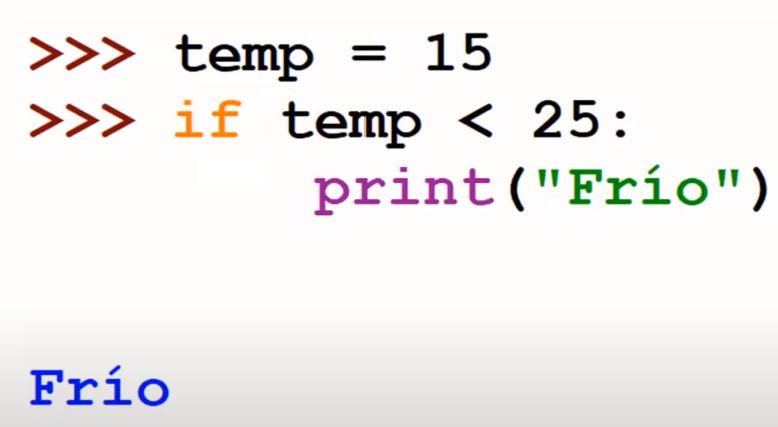
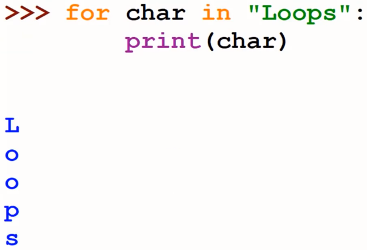
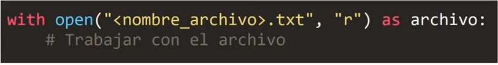

¿Por qué aprender a programar?
Aprender a programar es importante porque nos enseña a pensar. Al aprender a programar aprendemos a resolver problemas. Cuando programamos resolvemos un problema y lo traducimos a una serie de pasos. Estos pasos o serie de instrucciones van a ser ejecutadas para resolver el problema de forma automatizada.
Estas instrucciones se escriben en un lenguaje de programación, en este caso aprenderemos a programar en python, los lenguajes de programación nos permiten comunicarnos con la computadora e indicarle qué es lo que queremos que haga por nosotros para resolver un problema determinado.
El código de programación lo escribimos en archivos para poder ejecutarlo muchas veces y todas las veces que queramos
¿Qué es un lenguaje de programación?
Un lenguaje de programación es un lenguaje formal con reglas bien definidas que nos permite escribir una serie de instrucciones que pueden ser leídas y ejecutadas por la computadora.
El archivo creado con nuestras instrucciones es lo que denominamos programa.
¿Por qué aprender Python?
Este lenguaje es utilizado en la industria en aplicaciones reales, es decir que estaremos aprendiendo habilidades que podemos aplicar en un trabajo, es un lenguaje altamente poderoso y fácil de aprender.
Python se utiliza en ciencia de datos, inteligencia artificial, desarrollo web y enseñanza de programación porque es altamente pedagógico, se escribe muy parecido al lenguaje común que uilizamos para comunicarnos. Python se utiliza en el desarrollo de videjuegos, en la parte médica en ciencias puras como la biología e incluso la astrología.
¿Cuáles ventajas nos brinda Python?
- Es fácil de aprender
- Tiene una sintaxis clara y sencilla
- Es muy poderoso, por lo cual tiene aplicaciones reales en la industria
- Tiene alta demanda en el mercado laboral
¿Cómo descargamos e instalamos Python?
Podemos descargar la versión más reciente del lenguaje de programación desde su página oficial en la sección de Downloads: www.python.org. Luego de descargar el archivo lo ejecutamos e instalamos.
Introducción a IDLE
IDLE es una herramienta que se instaló junto con Python y nos va a permitir trabajar con nuestro código. IDLE es un entorno integrado de programación que se instala automáticamente cuando instalamos Python.
Un entorno integrado de programación es un software que nos permite tener muchas herramientas pequeñitascon muchas herramientas pequeñas abiertas juntas para poder trabajar con nuestro código, ejecutarlo y modificarlo. Con IDLE podemos escribie, editar y ejecutar código.
Para abrir o ejecutar IDLE debemos abrir la siguiente ubicación (se instala allí por defecto):
Este equipo > disco local (C:)> usuarios > nombre de usuario > AppData > Local > Programs > Python > Python 39 > Lib > idlelib
Python 39 hace referencia a la versión 3.9 de Python que se instaló en el curso, se pueden tener varias versiones de Python instaladas a la vez, pero dependiendo de nuestra versión variará el nombre de la carpeta. Algunas veces las carpetas que buscamos pueden estar escondidas por lo que debemos activar su visualización.
Una vez llegamos a idlelib debemos buscar un archivo que se llama idle, habrá dos archivos con el símbolo de Python, debemos ejecutar aquel que tiene la extensión .py, hay otro con extensión .pyw pero no funcionará, ese incluso nos indica que no tiene una consola. Al hacer doble clic en idle se nos abrirá una ventana que será nuestra consola o el shell de Python, donde vamos a poder escribir y ejecutar líneas de código de forma interactiva.
Al abrir la consola de Python aparecerá la versión de Python y el siguiente indicador >>>, los tres picoparéntesis nos indican que la consola está lista para recibir un comando. Podríamos escribir una suma y ejecutar dicho comando con la tecla enter.
En la parte superior de la consola de idle podremos ver algunas pestañas como archivo, edit, shell, debug, etc.
En archivo veremos opciones como abrir, cerrar, guardar, guardar como y otras opciones adicionales que usaremos con menos frecuencia. En la pestaña edit podremos ver las opciones copiar, cortar, pegar, seleccionar todo, rehacer, deshacer y otras herramientas que nos permitirán remplazar y encontrar valores en las líneas de código que vayamos escribiendo.
Shell nos permite reiniciar la consola interactiva de Python o interrumpir la ejecución de un programa. Esta última opción puede ser muy útil en el futuro cuando hagamos detección de bugs. La pestaña options nos permite configurar el idle para cambiar su tipo de letra, el tamaño de la misma, sus características, si queremos establecer cuántos espacios se usarán para escribir nuestro código, cómo se resalta el código y otras opciones generales. En la pestaña de configuación general es recomenddable marcar la caja que dice "Show line numbers in new windows" para que se muestre el número de la línea en los archivos cuando creemos una nueva ventana, esto es útil para poder hacer referencia a las líneas más fácilmente.
Para crear un archivo de Python podemos abrir la consola interactiva y en la pestaña file seleccionar "New file" eso abrirá una pantalla nueva. Al presionar enter se crearán nuevas líneas. En esta nueva ventana tendremos opciones parecidas a las que nos ofrece idle en su parte superior, excepto por la pestaña format que nos permitirá corregir el formato del código y la pestaña run, que nos permitirá ejecutar el archivo en el que trabajamos en la zona interactiva de idle.
Primer programa con Python
Para nuestro primer programa utilizaremos la función print(), una función es un nombre que asignamos a un proceso o una secuencia de instrucciones específicas, la función print() nos permitirá mostrar un mensaje por la consola que ejecute nuestro programa. Para copiar el mensaje a mostrar debe copiarse el texto entre comillas simples o doble, dentro de los paréntesis de la función, como se muestra a continuación.
print(¡Hola, mundo!")
La frase hola mundo es muy común en el mundo de la programación, por lo que se utilizó para nuestro primer programa, para poder ejecutar el archivo Python debemos guardarlo antes y luego de esto en la parte superior podremos ver donde fue guardado incluso. Al ejecutar el archivo podremos ver el texto "¡Hola, Mundo!" mostrado en un color azul por la consola interactiva. Los elementos de color azul mostrado en la consola interactiva, siempre serán resultados de ejecutar nuestro archivo (se muestra en azul si se mantienen los colores originales de la consola). Si se estableció el color oscuro el texto será blanco.
Ver archivo 1. hola.mundo.py para ver programa.
Variables
Una variable es un nombre que asignamos a un valor que vamos a utilizar en el programa. Este nombre representa un espacio en memoria que se va a reservar para un valor en la memoria de la computadora.
Al crear una variable estamos creando un espacio en la memoria, donde vamos a poder alojar o guardar un valor específico, nosotros asignamos el valor a la variable, por lo cual debemos imaginar que el valor está alojado dentro de la variable. Lo que hacemos en sí entonces es asignar un nombre para hacer referencia al valor que está actualmente en ese espacio en memoria. Luego podemos usar ese nombre que nosotros asignamos para usar o acceder al valor en nuestro programa, además podemos actualizar el valor que está conectado o asociado a una variable, a ese nombre específico en nuestro programa.
Las variables son importantes en programación porque nos permiten asignarle un nombre a un valor y usar ese valor en nuestro programa.
En Python para crear una variable copiamos el nombre de la variable separado del valor que alojará por un signo de igual (=). Por ejemplo: num = 5. En el ejemplo anterior creamos una variable de nombre num, la cual aloja el valor 5. Ahora podremos utilizar ese nombre en nuestras instrucciones para hacer referencia al valor 5.
Entonces la formula para una variable es: var (variable), = asignación, val (valor). No es estrictamente necesario pero se recomienda dejar un espacio entre el nombre de la variable y el valor en relación con el signo asignación (=). Esto se hace con el fin de que nuestro código sea más sencillo de leer, forma parte de las nuevas prácticas.
Podemos probar la creación de variables en la consola interactiva, debemos seguir los pasos mencionados antes y presionar enter, la consola no nos arrojará un valor de regreso, sin embargo la variable se habrá creado al presionar enter, para comprobar su existencia solo debemos escribir el nombre de la variable y presionar enter, así nos mostrará el valor alojado por la variable.
Si queremos actualizar el valor de la variable utilizamos la misma sintaxis y el mismo nombre de la variable pero cambiamos su valor al que deseemos actualizar. La sintaxis es la forma de escribir una línea particular de código.
A la acción de crear una variable y asignarle un valor por primera vez se le denomina definición de variable. Así funcionan las variables, las definimos y luego las utilizamos en nuestro programa.
Un ejemplo sencillo para utilizar la variable definida anteriormente (num = 5) es integrarla a una suma por ejemplo.
num + 2
La consola interactiva nos arrojará como resultado el número 7, ya que se sumó el número 2 al valor contenido por la variable, es decir, 5.
Ver archivo 2. creacion-variable.py para ver programa.Reglas para nombrar Variables
Existen algunas reglas que hay que seguir para nombrar las variables en nuestro programa, las mostramos a continuación:
- Los nombre de las variables deben empezar con una letra o con un guión bajo: _mi_variable ó mi_variable, por ejemplo.
- Los nombre de las variables no pueden comenzar con un número: 9mi_variable, por ejemplo, al escribir una variable de esta forma se mostrará un error que dirá SyntaxError: invalid Syntax, es decir, error de sintaxis: sintaxis inválida, este error aparecerá en el programa cuando escribamos algo que vila las reglas de sintaxis del lenguaje de programación.
- Los nombres de las variables solo pueden contener caracteres alfanuméricos y el caracter especial de guión bajo (A-Z, a-z, 0-9, _): num_vistas_ = 12332, por ejemplo. El guión bajo se utliza para separar palabras en caso de que el nombre de la variable esté conformado por más de una palabra.
- Los nombres de variables no pueden contener caracteres que no sean alfanuméricos: @variable = 34, por ejemplo.
- En Python se distingue entre mayúsculas y minúsculas, por lo que una variable puede decir lo mismo al leerlo pero al tener mayúsculas o minúsculas serán en realidad variables distintas: Edad, edad, EDAD, por ejemplo, los tres nombres anteriores dicen edad pero en Python son tres variables distintas por el uso de mayúsculas que es distinto en cada una. Podemos probarlo en un programa definiendo y consultando las variables mencionadas en el ejemplo con distintos valores.
Ver archivo 3. minúcula-mayústula-variable.py para ver programa.
Tipos de datos
Datos numéricos
Números entero
Este tipo de dato está constituido por los números que no tienen decimales, estos pueden ser positivos, negativos y el 0 cuando no tiene parte decimal: 5, 0 o -10, por ejemplo.
Podemos comprobar el tipo de dato que es un valor por medio de una función que existe en Python y nos permite saber el tipo de valor, esta función es type(valor), como se puede ver debemos copiar el valor dentro del paréntesis y así el programa nos dirá qué tipo de dato es. Al pasar un valor entero la consola nos reflejará el letrero int (es una abreviación de Integer que significa entero en inglés), que significa "dato entero".
En Python no existe un límite para el número entero máximo que puede ser representado en nuestro código, esto está limitado unicamente por los recursos del dispositivo en donde ejecutamos el programa
Números en coma flotante
Este tipo de dato está constituido por los números que tienen decimales, pueden ser positivos, negativos e incluso el cero con parte decimal. Al comprobar este tipo de datos con la función type la consola nos devolverá el letrero float (que en inglés significa flotar, los números se denominan en coma flotante por la forma en que se representan los números en memoria).
Datos booleanos
Los datos booleanos representan los valores verdadero o falso. Si el valor es verdadero la consola nos regresará True (verdadero en inglés) y en caso contrario nos regresará False (falso en inglés). En python debemos trabajar con la palabra True y False porque son palabras especiales, palabras reservadas para el lenguaje de programación. También es importante recalcar que debemos escribir True o False con letra mayúscula al inicio, si no, el programa no lo reconocerá de forma correcta.
Los valores booleanos son importantes para las expresiones condicionales y ciclos (mejor conocidos como bucles). Temas que trataremos más adelante en este curso.
Los valores True y False se muestran de color distintos en el idle porque son palabras reservadas (mejor conocidas como keyword). Al comprobar un dato booleano con la función type() la consola nos regresará el texto bool, que es una abreviación de boolean, es decir, booleano en inglés.
Cadenas de caracteres
Este tipo de dato es muy usado en programación y es muy común, se consigue prácticamente en cualquier programa que utilicemos. Las cadenas de caracteres (String) son una secuencia de caracteres encerrados entre comilla y usados para representar texto en el programa. Este es el tipo de dato que utilizaremos en cualquier momento que necesitemos representar, usar o guardar texto en el programa.
Las cadenas de caracteres pueden tener cualquier tipo de caracter que podamos escribir con el teclado. El texto puede que se quiere guardar, usar o representar puede estar encerrado por comillas dobles ("texto") o comillas simples ('texto'), python acepta ambos estilos siempre que el código sea consistente. Al comprobar un dato de tipo String con la función type() la consola nos regresará el texto str (que es una abreviación de la palabra String en inglés).
Al asignar una cadena de caracteres a una variable y acceder a la misma por meido del nombre de la variable, python nos mostrará la cadena entre comillas simple aunque hayamos utilizado comillas dobles para definir la cadena (esto en la consola interactiva). Es importante tener en cuenta que al crear una cadena de texto no podemos mezcla comillas simples con comillas dobles: "Benjamin' o 'Benjamin", por ejemplo. Al mezclar las comillas dobles con simples para escribir un String y ejecutar el programa se producirá un error que dice SyntaxError: EOL while scanning string literal, lo cual se traduce como Error de sintaxis: fin de línea (end of line) mientras se escaneaba la cadena de caracteres. Es decir, el programa llegó al final de la línea y la cadena de caracteres aún no había terminado, python solo detecta el final de la cadena cuando detexta el tipo de comilla correspondiente.
Otro detalle importante es que el valor de un número entero no es igual que un número que forma parte de una cadena de texto, el número entero tendrá ciertas propiedades o va a poder ser utilizado en el programa de forma distinta que el número que forma parte de una cadena de texto porque son un tipo de dato distinto.
Un número como entero podrá ser utilizado en operaciones aritméticas como suma, resta, multiplicación, división, etc. Y el mismo valor como cadena de caracteres solo podrá ser utilizada como una cadena de texto tradicional.
Ver archivo 4. tipo-de-datos.py para ver programa.
Función len()
Una característica muy importante de la cadena de caracteres es el tamaño o longitud (Length), el tamaño de la cadena de caracteres es el número de caracteres que posee. La longitud de una cadena de caracteres la podemos obtener por medio de la función len(), la función nos retornará la cantidad de caracteres de la cadena que coloquemos dentro de sus paréntesis, las comillas también deben copiarse en este caso: len("perro"), por ejemplo. Si copiamos las comillas sin nada nos arrojará cero (0). En programación cuando utilizamos una función se denomina llamar a la función. A las funciones se les pueden pasar variables si se quiere.
Si no copiamos las comillas a una cadena de texto pasada directamente a la función len(), el programa nos arrojará un error.
La estructura interna de una cadena de caracteres es similar a una rejilla, tiene una estructura muy determinada, cada caracter tiene su lugar específico en la rejilla, y cada uno de esos lugares o posiciones específicas están marcadas por un entero, a estos enteros de les denomina índice, cada uno de esos entero son denominados indice, cada uno de esos enteros se denomina como un indice individualmente.
La secuencia comienza desde 0, no desde uno como uno cuenta normalmente, en programación y computación es común comenzar a contar desde cero (0). Esto se llama numeración basada en cero.
El primer caracter va estar en el índice 0, el segundo caracter en el índice 1 y así sucesivamente incrementando de uno en uno a medida que vamos de caracter en caracter hacia la derecha. Esta es la estructura básica de una cadena de caracteres.

Ver archivo 5. funcion-len.py para ver programa.
Indexación (Indexing)
Si queremos acceder a cada uno de los caracteres de una cadena de caracteres de forma individual, tenemos que recurrir a un proceso o una herramienta llamada indexación. La indexación nos permite acceder a caracteres individuales de la cadena. Para acceder a cada caracter se utiliza su índice correspondiente. Para hacer la indexación copiamos primero la cadena de caracteres o la variable que contiene a ese valor (nuestra cadena) y luego entre corchetes el valor del índice al que queremos accceder, si queremos obtener la letra t de la cadena "Python" debemos copiar: "Python" [2], o guardar la cadena en una variable y copiar variable [2], por ejemplo.
Debemos tener cuidado al acceder a uno de los caracteres de la cadena, si tratamos de acceder a un índice más allá de los que posee la cadena de caracteres, por ejemplo tratar de acceder al indice 6 de la cadena "Python" (solo tiene cinco caracteres según la numeración base 0), aparecerá un error: IndexError: string index out of range (ErrorDeIndice: Índice de la cadena de caracteres fuera de rango).
Es importante mencionar que el espacio también cuenta como caracter, por lo que se toma en cuenta al momento de contar el indice en una cadena.
Ver archivo 6. indexacion-cadena-caracteres.py para ver programa.
Rebanado (Slicing)
Esta operación nos permite tomar una rebanada (poción) de una cadena de caracteres. Para realizar el rebanado debemos escribir la cadena o variable con la cadena de texto, seguida de dos corchetes y dos valores numéricos esparados por dos puntos (:), siendo el primer valor el inicio de la rebanada y el segundo el final de la rebanada: cadena o variable [inicio:fin]. Es importante mencionar que el caracter marcado como final de la rebanada no será incluído en el resultado. Si tenemos la cadena "Python" y queremos "yth" deberemos escribir: "Python"[1:4], por ejemplo.
Hay varias variables de este rebanado y se mostrarán y explicarán a continuación.
- Slicing desde un caracter determinado de la cadena hasta su final: cadena o variable [inicio:], "perro" [2:], por ejemplo, esto nos devolverá "rro"
- Slicing desde el inicio de la cadena hasta un caracter determinado de la cadena o variable: cadena o variable [:final], "perro"[:3], por ejemplo, esto nos devolverá "per"
- Slicing de la cadena completa: cadena o variable [:], "perro" [:], por ejemplo, esto nos devolverá "perro". Es decir que esto nos permite obtener una copia de todos los caracteres de la cadena.
Es importante mencionar que al rebanar una cadena de caracteres podemos utilizar índices que estén fuera del rango por cómo el lenguaje de programación fue imiplementado por su creador, esto no resulta en un error como cuando lo hacemos con el indexado, en este caso lo que hace es incluir el último caracter de la cadena : "perro" [1:5], por ejemplo, el índice de la cadena "perro" solo llega a 4, pero al utilizar el cinco como final, nos devolverá "erro", es decir que se incluye el último caracter de la cadena.
No importa si colocamos como final un valor de índice que exceda por mucho el índice de la cadena, el resultado será el mismo pero no es recomendable, no es una buena práctica: "perro" [3:22], por ejemplo, esto nos devolverá "rro".
Parámetro paso en el Slicing
Este es un tercer parámetro que nos permite establecer la forma en que se saltará de un caracter a otro, de dos en dos o de tres en tres por ejemplo. La sintaxis es la misma que el Slicing normal, solo que agregamos dos puntos (:) más para agregar el parámetro de paso: cadena o variable [inicio:fin:paso], "dinosaurio" [1:8:3], por ejemplo, esto nos devolverá "isr".
Ver archivo 7. rebanado-slicing.py para ver programa.
Métodos de cadena de caracteres
Los métodos de cadena de caracteres son operaciones comunes que tienen implementadas en Python. Para ejecutar un método de cadena de caracteres debemos copiar la cadena de caracteres o variable con la que utilizaremos el método, luego un punto (.), el nombre del método y finalmente entre paréntesis se copian los valores que necesite el método si es que los necesita: variable.método(valor), por ejemplo. Los métodos son parecidos a funciones pero están asociados a un elemento o valor en particular. Si el método no necesita un valor se copia el paréntesis vacío.
Método capitalize
El método capitalize retorna una copia de la cadena con el primer caracter en mayúscula y el resto en minúscula, este método no necesita ningún valor: variable.capitalize(), por ejemplo. El paréntesis vacío sirven para decirle a nuestro programa que queremos ejecutar esa acción, es como una alerta roja. Si copiamos "perro".capitalize(), la consola nos regresará "Perro", el resultado será el mismo al escribir "pERRO".capitalize(), por dar algunos ejemplos.
Método find
Este método nos permite encontrar el índice en el que empieza una palabra o letra en una cadena de texto. Como valor recibe la palabra o letra que buscamos y al buscar una letra nos señalará solamente la primera aparición de la letra. La sintaxis sería variable.find("letra o palabra"). Si la frase es "Hola Mundo" y escribimos "Hola Mundo".find("Mundo") nos retornará 5, porque la palabra "Mundo" comienza en ese índice. Adicionalmente podemos buscar frases dentro de otras cadenas y saber en dónde comienza dicha frase si existe en la cadena.
Si buscamos algo que en realidad no existe en la cadena de texto no se presentará un error pero nos retornará el valor -1.
El métrodo find también puede recibir dos valores adicionales los cuales indican desde cuál y hasta cuál caracter se realizará la búsqueda: variable.find("caracter, palabra o frase",inicio,final). Si se copia solo el valor de inicio para la búsqueda el método trabajará igualmente, lo mismo pasa si colocamos un valor de final que excede el índice de la cadena en que buscamos, sin embargo estas dos últimas prácticas no son recomendable, no son una buena práctica.
Método index
Este método tiene exactamente las mismas características que el método find, la diferencia es que cuando no se encuentra el valor buscado en la cadena de caracteres, en lugar de retornar -1 como find, nos retorna un error que dice ValueError: Substring not found, que se traduce como valor de error: subcadena no encontrada, con subcadena se refiere a la palabra, letra o frase buscada dentro de la cadena. Pero al encontrar el elemento buscado nos dará los mismos resultados que el método find.
Otra diferencia importante es que cuando no se consigue un caracter con find() el programa retorna -1 pero sigue conrriendo, en cambio con index() el programa detiene su ejecución pues se identifica que hay un error. Se rompe el código, como se dice coloquialmente
Métodos que comienzan con is
Estos métodos tienen la particularidad de que retornan verdadero o falso, a continuación mencionaremos varios de ellos.
Método isalnum
Este método verifica si todos los caracteres contenidos por una cadena son alfanuméricos (a-z, A-Z, 0-9), si es verdad retorna True, si no, retorna False.
Método isalpha
Este método verifica si todos los caracteres contenidos por una cadena son alfabéticos, si es verdad retorna True, si no, retorna False.
Método isdecimal
Este método verifica si todos los caracteres contenidos por una cadena son decimales, si es verdad retorna True, si no, retorna False. Aunque el nombre parece decir que se trata de una cadena conformada por número decimal, en realidad en python los caracteres decimales son aquellos que se pueden usar para formar números en base 10, por ejemplo, U+0660, ARABIC-INDIC DIGIT ZERO. Formalmente, un carácter decimal es un carácter en la categoría general «Nd» de Unicode, esto dice la documentación, pero en sí, esto verifica que los caracteres de la cadena son número solamente, en caso de algún otro caracter que no sea un número esté presente en la cadena, retornará False.
Método isdigit
Este método verifica si todos los caracteres contenidos por una cadena son digitos, en Python .os dígitos incluyen los caracteres decimales y dígitos que requieren un tratamiento especial, como por ejemplo los usados para superíndices. Esto incluye dígitos que no pueden ser usados para formar números en base 10, como los números Kharosthi. Formalmente, un dígito es un carácter que tiene la propiedad Numeric_Type definida como Digit o Decimal, esto dice la documentación.
Los métodos isdecimal y isdigit se diferencian porque isdecimal califica como False caracteres númericos que requieren un tratamiento especial, como los números para superíndice o subíndice por ejemplo, este tipo de caracteres no son decimales, y isdigit califica estos caracteres con tratamiento especial como True. En internet se afirma que el método isdecimal puede ser utilizado en objetos unicode.
Los métodos que comienzan con is son muy útiles cuando se comienza a trabajar con condicionales.
Método lower() y upper()
El método lower retorna una copia en minúsculas de la cadena de caracteres y upper retorna una copia en mayúsculas de la cadena de caracteres. La sintaxis es como se explicó antes: cadena o variable.lower/upper(), "perro".upper(), por ejemplo, esto nos retornará "PERRO".
Ver archivo 8. metodos-de-cadena.py para ver programa.
Recibiendo datos del usuarios
Para ciertos programas, depender de instrucciones fijas no va a ser suficiente, alguna veces vamos a necesitar interactuar con el usuario para recibir datos y mostrar resultados, para esto utilizamos la función input() de python, esta función nos permite recibir datos del usuario y mostrarle un mensaje descriptivo para indicar qué tipo de dato estamos esperando. normalmente el valor ingresado por el usuario será asignado en una variable para poder trabajar con el en el programa.
La sintaxis es variable = input(mensaje), el mensaje debe ser escrito como una cadena de caracteres (es decir, entre comillas), variable = ("Ingresa un texto por favor"), por ejemplo. EL mensaje es opcional, sin embargo es recomendable para indicar al usuario qué tipo de valor se está esperando.
En el mensaje del input es recomendable utilizar dos puntos y un espacio (: ) para separar el lugar donde el usuario va a empezar a ingresar el valor.
Es importante tener en cuenta que la función input siempre retorna una cadena de caracteres, es decir que aunque el usuario ingrese un número, dicho número estará representado como una cadena de caracteres y no como un dato numérico, por lo que si queremos utilizar dicho valor en una operación aritmética, tendremos que convertir el valor al tipo de dato con el que queremos trabajar.
Para transformar un número ingresado al input a un dato numérico debemos utilizar la función int(), esta función convierte el valor retornado como cadena de caracteres en un dato numérico de entero, se puede transformar a otro tipo de dato pero en este caso usaremos int porque necesitamos es un entero.
Quedaría de la siguiente forma:
num = input("Ingrese un número: ")
num = int(input("Ingrese un número: "))
Ver archivo 9. funcion-input-e-int().py para ver programa.
Operadores
Los operadores son esenciales para crear cualquier programa en python, los operadores son símbolos que denotan una operación. Son basicamente símbolos que vamos a usar en nuestro código para realizar operaciones.
Los operandos son valores con los cuales se ejecuta la operación denotada por un operador. Al juntar los operadores con los operandos obtenemos algo denominado expresión.
Una expresión es una combinación de valores (operandos), variables (que contienen a los operandos) y operadores que al ser evaluados resultan en un valor. Cuando hablamos de una expresión decimos que la estamos evaluando, ese es el término técnico o formal en programación, se evalúa una expresión para obtener un valor final.
Las expresiones se evalúan de izquierda a derecha normalmente, excepto cuando ciertos operadores tienen mayor "importancia" o precedencia para el orden de las operaciones. Algo muy parecido a lo que ocurre en las operaciones matemáticas, donde los operadores de división o multiplicación se evalúan antes que los de suma o resta.
Existen cuatro tipos de Operadores
- Aritméticos
- Lógicos
- De asignación
- Relacionales
Operadores aritméticos
Estos operadores nos permiten realizar operaciones aritméticas, estos nos permiten realizar las siguientes operaciones:
- Suma
- Resta
- Multiplicación
- División
- División entera
- Exponenciación o actuar como exponentes
- Módulo
Operador de suma (+)
El operador de suma, suma los operandos para obtener un resultado final, podemos sumar enteros o números de coma flotante, podemos sumar cualquier tipo de valor numérico en python, 5 + 5, por ejemplo, nos retornará 10.
También podemos utilizar este operador para operar con cadenas de caracteres, el operador suma aplicado a cadenas de caracteres lo que hace es concatenar o unir cadenas de caracteres para formar una sola: "Hola" + " " + "Mundo", por ejemplo, esto nos retornará "Hola Mundo". Entonces el operador de suma tiene distintas funciones en python dependiendo del tipo de operando con el que opere. En programación concatenar significa unir cadenas de caracteres para formar una sola.
Operador de resta (-)
El operador de resta, resta el operando de la izquierda, menos el operando de la derecha para obtener un resultado final, 10 - 5, por ejemplo, esto nos retornará 5, o 4 - 8, que nos retornará -4. Podemos obtener resultados negativos si el operando de la derecha es mayor que el de la izquierda, y también podemos restar números de coma flotante, el resultado será un número de coma flotante, siendo una aproximación del resultado correcto o preciso.
Operador de multiplicación (*)
El operador de multiplicación, multiplica los operandos entre sí, 10 * 5, por ejemplo, esto nos retornará 50. Podemos multiplicar números negativos y dicha operación seguirá las reglas matemáticas de signos. También podemos multiplicar números de coma flotante y el resultado será un número de coma flotante, siendo una aproximación del resultado correcto o preciso.
Operador de división (/)
Este ooperador se utiliza para dividir el operando de la izquierda entre el operando de la derecha, algo a tener en cuenta en la división realizada con python es que todos los resultados son números de coma flotante, aunque dividamos enteros. Si tenemos 15 / 5, por ejemplo, nos retornará 3.0 en lugar de 3.
También es importante tener en cuenta que al tratad de divisir entre cero aparecerá el error ZeroDivisionError: division by zero, es decir, error de división por cero: división por cero, el programa se detiene inmediatamente con ese error porque la división con cero no está definida.
Operador de división entera (//)
Para obtener enteros como resultados de la división debemos utilizar el operador de división entersa, en inglés de denomina Floor Division. Este símbolo nos retornará siempre un número entero, dejando de mostrar cualquier decimal y mostrando solo la parte entera del resultado.
Este operador si nos puede retornar un número de coma flotante, esto ocurre cuando dividimos dos números de conma flotante. Sin embargo, al utilizar operandos decimales con un operador de división normal, el resultado mostrado nos daría todos los decimales permitidos por la computadora, en cambio, con el operador de división entera se muestra la parte entera y la parte decimal es truncada, solo nos muestra 0.
Este operador se utliza de forma común en el algoritmo de búsqueda binaria, este algoritmo nos permite encontrar un valor en una secuencia de forma muy eficiente. Un algoritmo es una secuencia de pasos que se utiliza para resolver un problema.
Operador de exponente o exponenciación (**)
Este operador se utiliiza para establecer el operando de la izquierda como base para elevarlo al valor de la derecha que funciona como exponente, 5 ** 3, por ejemplo, esto sería 5 elevado a la 3, lo cuál nos da 125.
Podemos hacer exponenciación con números de coma flotante, 4.5 ** 4.7, por ejemplo.
Podemos conseguir la raíz cuadrada de un número elevándolo a un medio, 16 ** (1/2), por ejemplo. Y podemos conseguir la raís cúbica de un número elevándolo a un tercio, 25 ** (1/3), por ejemplo.
Al elevar cualquier número a 0 se cumple la regla matemática que establece que todo número elevado a 0 será igual a 1.
Operador módulos
El operador módulo nos retorna el resto de una división. Es comúnmente utilizado para verificar si un número es par o impar, ya que nos permite saber el resto de la división por 2 de ese valor. Un número es par cuando el resto es igual a 0 e impar cuando el resto es diferente a 0. En la siguiente imagen podemos ver dónde se ubica el resto en una división, es el número 1 debajo del 5, en ese ejemplo.

Aunque decimos que se puede saber si un número es par con la expresión 10 % 2, por ejemplo, podemos realizar esta operación con otros valores numéricos que deseemos.
Orden de las operaciones
En una expresión podemos utilizar multiples operadores aritméticos y las operaciones matemáticas de este tipo tienen un orden de solución, podemos recordar este orden con el acrónimo PEMDAS, este es válido en inglés pero nos puede ser útil, mostramos su significado en la siguiente lista.
- P: Paréntesis
- E: Exponentes
- M: Multiplicación
- D: División
- A: Addition (suma)
- S: Subtract (resta)
Además del orden mencionado anteriormente es relevante recordar que las operaciones se evalúan de izquierda a derecha. Es importante recordar esto para cuando existan dos operaciones que tienen el mismo nivel de importancia o precedencia.
Ver archivo 10. operadores-aritmetico.py para ver programa.
Operadores lógicos
Los operadores lógicos nos permiten trabajar con valores booleanos (True y False). Los tres valores lógicos que podemos usar en python son: and, or o not. Cada uno de ellos tiene sus propias reglas específicas y nos van a permitir formar expresiones más complejas que siguen las reglas de la lógica
Operador and
Este operador evalúa si el operando izquierdo y el derecho son verdaderos, y dependiendo de eso retorna verdadero o falso. Digamos que tenemos dos expresiones llamadas X y Y, al utilizar el operador and, evaluaremos si las expresiones X y Y son True o False, si son True el programa retornará True y en caso contrario retornará False. Igualmente las reglas del operador and son las que se muestran en la siguiente tabla.
La tabla se denomina tabla de verdad o Trueth Table en inglés, la tabla establece lo siguiente:
- Si ambos operandos unidos por el operador and son True, el resultado será True
- Si uno de los operandos es False o ambos son False, el resultado será False
Un ejemplo de expresiones sencillas a evaluar con and puede ser el siguiente: (5 < 6) and (6 > 8). Acá hay una expresión que evalúa si cinco es menor que seis, como es correcta esa expresión es True, la segunda expresion evalúa si seis es mayor que ocho, como es incorrecta esa expresión en False. En conjunto ambas expresiones unidas por el operador and nos retornarán False, por lo que se explicó en las reglas reflejadas en la tabla de verdad.
Operador or
Este operador también nos permite conecar dos expresiones y dependiendo del valor de cada expresión, obtendremos un valor de True o False para la expresión completa. Veremos a continuación la tabla de verdad de este operador y una breve explicación.

- Si ambos operandos unidos por el operador or son True, el resultado será True
- Si uno de los operandos es False, el resultado será True
- Si ambos operandos son False, el resultado será False
En resumen, cuando uno o ambos operandos son True, el resultado es True.
Un ejemplo de expresiones sencillas a evaluar con or puede ser el siguiente: (5 < 6) or (6 > 8). Acá hay una expresión que evalúa si cinco es menor que seis, como es correcta esa expresión es True, la segunda expresion evalúa si seis es mayor que ocho, como es incorrecta esa expresión en False. En conjunto ambas expresiones unidas por el operador or nos retornarán True, por lo que se explicó en las reglas reflejadas en la tabla de verdad.
Operador not
Este operador es utilizado para negar el valor de una expresión, a constinuación veremos la tabla de verdad del operador not y una breve explicación.
- Si la expresión es True, el resultado será False
- Si la expresión es False, el resultado será True
Un ejemplo sencillos del funcionamiento de not puede ser: not True, que nos retornará False o no False que nos retornará True. También puede ser (5 < 6), lo cual es True, así que con el operador not nos retornará False.
Todos estos operadores lógicos son muy importantes al trabajar con expresiones condicionales, con ciclos o bucles. En cuanto a prioridad el operador not tiene mayor prioridad, cuando tenemos una expresión con multiples operadores lógicos, la prioridad va a ser importante. Primero se evalúan las operaciones not, luego las and y por último las or. Si la expresión tiene varios operadores iguales, se evaluarán los mismos de izquierda a derecha.
Ver archivo 11. operadores-logicos.py para ver programa.
Operadores relacionales
Estos son utilizados para comparar valores y retornan un valor booleano. Para utilizarlos copiamos un valor, operador y otro valor: 5 > 59, por ejemplo.
Operador mayor que (>)
Este operador retorna True si el operando de la izquierda es mayor que el de la derecha, en caso contrario retorna False. En sí evalúa si el operando de la izquierda es mayor que el de la derecha.
Operador mayor o igual que (>=)
Este operador retorna True si el operando de la izquierda es mayor o igual que el de la derecha, en caso contrario retorna False. En sí evalúa si el operando de la izquierda es mayor o igual que el de la derecha.
Operador menor que (<)
Este operador retorna True si el operando de la izquierda es menor que el de la derecha, en caso contrario retorna False. En sí evalúa si el operando de la izquierda es menor que el de la derecha.
Operador menor o igual que (>=)
Este operador retorna True si el operando de la izquierda es menor o igual que el de la derecha, en caso contrario retorna False. En sí evalúa si el operando de la izquierda es menor o igual que el de la derecha.
Operador igual que (==)
Este operador retorna True si el operando de la izquierda es igual al de la derecha. Se utilizan dos signos de igual (==) ya que el signo de igual solo (=) es un operador de asignación, lo usamos para asignar valores a las variables, el doble signo igual es para comparar valores.
Operador diferente que (!=)
Este operador retorna True si el operando de la izquierda es diferente al de la derecha, en caso contrario, retornará False.
Operadores relacionales y cadenas de caracteres
Los operador relacionales pueden utilizarse para comparar cadenas de caracteres, el operador es utilizado para comparar cadenas de caracteres y saber si son iguales.
"perro" == "perro" = True
Los operadores mayor que y menor que comparan el orden lexicográfico o alfabético. Si el operando de la derecha aparece antes en orden alfabético y usamos el operador menor que, retornará True, en caso contrario retornará False. Usarán la lógica de un diccionario.
A > B = False
A < B = True
Cuando utilizamos menor que y la cadena de la izquierda tiene una longitud mayor, retornará False, en caso contrario retornará False. Es como si comparara el tamaño de las cadenas en este caso.
"ABC" < "A" = False
"ABC" > "A" = True
El operador diferente que funciona igual que con los números, retorna True si las cadenas comparadas son diferentes.
"Perro" != "Perro" = False
Es importante tener en cuenta que los operadores igual que y diferente que toman en cuenta las mayúsculas, si comparamos dos palabras que se leen igual pero están escritas de forma distinta por mayúsculas o minúsculas, esto afectará el retorno.
"Perro" != "perro" = True
"Perro" == "perro" = False
Ver archivo 12. operadores-relacionales.py para ver programa.
Operadores de asignación
Estos operadores son utilizados para asignar valores a las variables, son como una mezcla entre los operadores aritméticos y el operador de asignación (=). Lo que hacen es realizar una operación con el valor actual de la variable antes de asignarlo a la misma. Podremos ver una descripción detallada de cada uno y un ejemplo en la siguiente lista.
Operador =
El igual (=) es utilizado para asignar el valor a una variable sin cambiar su valor, num = 5, por ejemplo.
Operador +=
El operador de suma (+) con el de igual (=) realiza una suma del valor actual de la variable con el valor asignado a la expresión que contiene este operador.
variable = 5
variable += 3
variable = 8
Operador -=
El igual de resta (-) con el de igual (=) realiza una suma del valor actual de la variable con el valor asignado a la expresión que contiene este operador.
variable = 5
variable -= 3
variable = 2
Operador *=
El operador de multiplicación (*) con el de igual (=) realiza una multiplicación del valor actual de la variable con el valor asignado a la expresión que contiene este operador.
variable = 5
variable *= 3
variable = 15
Operador /=
El operador de división (/) con el de igual (=) realiza una división del valor actual de la variable con el valor asignado a la expresión que contiene este operador.
variable = 10
variable /= 2
variable = 5.0
Operador //=
El operador de división entera (//) con el de igual (=) realiza una división del valor actual de la variable con el valor asignado a la expresión que contiene este operador, como es una división de enteros el resultado será siempre reducido a un entero.
variable = 10
variable //= 2
variable = 5
Operador **=
El operador de exponenciación (//) con el de igual (=) realiza eleva el valor actual de la variable con al valor asignado a la expresión que contiene este operador.
variable = 10
variable **= 2
variable = 100
Operador %=
El operador de módulo (%) con el de igual (=) realiza una división del valor actual de la variable con el valor asignado a la expresión que contiene este operador, y da como resultado el resto de esa división.
variable = 10
variable %= 2
variable = 0
Ver archivo 13. operadores-asignacion.py para ver programa.
Sentencias condicionales
Una sentenia condicional es una instrucción o un grupo de instrucciones cuya ejecución depende del valor de una condición booleana.
A continuación se muestra el la lógica básica de un condicional, tenemos una condición que definimos en el programa, si dicha condición es False, no ocurre nada, el programa consitnúa su ejecución más allá del condicional. Pero si es True, una secuencia de instrucciones que estaban condicionadas por la condición se van a ejecutar, y luego de haber terminado su ejecución, el programa seguirá su ejecución normal.

Condicional if
La sintaxis de una condicional se basa en la palabra if, espacio, condición, dos puntos (:), código a ejecutar, como se puede ver en la siguiente imagen. La palabra if significa si, si en forma condicional, por ejemplo, "si llueve hoy, haré tal cosa". Los dos puntos son muy importantes porque si no se colocan el programa retornará un error. además de esto, el código a ejecutar si se cumple la condición, tiene que estar indentado, la indentación es crear distintos niveles de espacio ene el código. Es muy importante porque permite a pyhton reconocer qué código está condicionado y qué código forma parte del programa principal, la indentación son 4 espacios, o se puede hacer presionando una vez la tecla tab.

A continuación se muestra una condicional que evalúa si el valor de temperatura es estrictamente menor que 25, si es así se imprime por consola la palabra frío.
En caso contrario el programa no imprimirá nada por consola, como se ve en la siguiente imagen.
Cláusula 'else'
Ya sabemos qué ocurrirá si se cumple la condición, pero ¿qué pasa si no se cumple dicha condición?. La palabra else es equivalente a decir "si llueve hoy, haré tal cosa, si no, haré otra cosa".
La lógica básica de un condicional con la cláusula else se puede ver en la siguiente imagen, tenemos una condición, si la condición es True, se ejecutarán una secuencia de instrucciones. Si la condición es False, se ejecutará la cláusula else, es decir, el código que escribimos como parte de esa cláusula. Después de haberse ejecutado cualquiera de los dos grupos de instrucciones se continúa ejecutando el programa, más allá del condicional.

La sintaxis te un condicional if con una cláusula else es la que se puede ver en la siguiente imagen, la nueva parte agregada está resaltada de color amarillo.
A continuación se puede ver cómo funciona el if else, la condicional verifica si el valor de la variable temp es menor que 25, como lo es, el resultado es True y ejecuta el código escrito en el if.
}En cambio si el valor de la variable diera como resultado False, se ejecutaría el código escrito en la cláusula else, como se puede ver en la siguiente imagen.

Cláusula 'elif'
Esta cláusula nos permite especificar otras condiciones aparte de la establecida por el if, y cómo manejar dichas condiciones. Podemos ver un ejemplo de la sintaxis de la condicional con elif en la siguiente imagen. En el ejemplo se ve la siguiente ejecución, si la condición 1 se cumple se ejecutará el código del if, en caso contrario el programa pasará a verificar si se cumple la segunda condición, si se cumple se ejecuta el código de la cláusula elif, si no se cumple, se ejecutará el código escrito en la cláusula else. Solo se ejecutará un bloque de código se va a ejecutar, el código que corresponda a la condición que se cumpla.

A continuación veremos un ejemplo de una condicional con elif y else, la siguiente imagen muestra cuando se ejecutaría la primera línea del condicional, es decir el bloque del if.

En la siguiente imagen se muestra cómo se ejecutaría la segunda línea del condicional, es decir, el bloque de código del elif.

En la siguiente imagen se muestra cómo se ejecutaría la tercera línea del condicional, es decir, el bloque de código del else.

Es importante recordar que puede haber más de una cláusula 'elif', pero solo una cláusula 'else', porque la cláusula 'else' sirve como un respaldo en caso de que ninguna de las condiciones se cumpla. La cláusula else es la última siempre.
En la siguiente imagen podemos ver un ejemplo de una condicional con varias cláusulas 'elif'.

También es importante que en cada línea de las condiciones debemos agregar dos puntos (:), en caso contrario el programa retornará un error de sintaxis.
Ver archivo 14. condicional-if-else-elif.py para ver programa.
Comentarios
Los comentarios son muy importantes para escribir código de calidad y para explicar lo que queremos hacer con nuestro código. Un comentario es básicamente texto que se escribe en el programa para facilitar su comprensión. Los comentarios no son parte del código, ellos están allí para ser leídos por los humanos, cuando un programa se ejecuta esos comentarios no son considerados parte del código y no lo afectan de ninguna forma.
El propósito principal de los comentarios es describir la lógica de ciertas partes del código a otros programadores que lean el programa, o incluso para nosotros mismos entender la lógica que usamos al implementar partes del código. En python un comentarios se realiza con el símbolo de numeral (#) seguido del texto del comentario, el numeral debe estar al inicio de la línea.
Algo a evitar es comentar en exceso, este es un error muy común al aprender a programar, comentar en exceso puede hacer que el código sea más difícil de leer si los comentarios contienen descripciones que se pueden interpretar muy fácilmente a través del código. Debemos asumir que el desarrollador que está leyendo nuestro código ya sabe programar en nuestro lenguaje y nuestros comentarios solo deben agregar detalles extras o detalles importantes para explicar partes complejas del código. no comentar solo por comentar o describir el código, a continuacion se muestra un ejemplo de cómo sería un código con comentarios en exceso.

Debemos evitar comentarios redundantes o que describan algo que sea obvio en el código. Pero los comentarios bien utilizados son una herramienta poderosísima para escribir buen código
Listas
Las listas son un tipo de estructura de datos que ya viene predeterminado en el lenguaje de programación y que podemos utilizar muy fácilmente. Las listas son una estructura de datos utilizada para almacenar múltiples valores en secuencia. En la siguiente imagen podremos ver cómo luce una lista en python, la lista de la imagen está conformada por 4 números, los números son los elementos de la lista, pero una lista puede contener valores de cualquier tipo de dato. La caracterítica visual principal de una lista es que está definida o rodeada por corchetes ([]). Los corchetes son obligatorios para definir una lista en python.

Los elementos de una lista en python son separados por medio de una coma (,) y un espacio.
Una lista puede tener contener cadenas de caracteres y cualquier otro tipo de valor, incluso valores de distintos tipos, estos valores son secuencias ordenadas.

Es una secuencia ordenada porque cada uno de sus elementos está ubicado en un índice específico, exactamente igual que los caracteres de una cadena de caracteres. En el índice 0 está el primer elemento, en el índice 1 está el segundo elemento, en el índice 2 está el tercer elemento y así sucesivamente.

No se llama secuencia ordenada porque la lista esté ordenada en un orden específico, sino que cada uno de sus elementos tiene su propio lugar en la secuencia.
Veremos las características de una lista en la siguiente lista.
- Es una secuencia ordenada de valores.
- Puede contener valores de cualquier tipo (enteros, números en coma flotante, cadenas de caracteres, otras listas, e incluso valores de otros tipos o estructuras de datos que trataremos más adelante).
- Puede contener valores de distintos tipos, es decir, tipos de valores mezclados
- Cada posición en la lista está asociada a un entero llamado "índice".
- Es mutable. Puede ser modificada.
Cómo acceder a un elemento
Cuando definimos una lista, la asignamos a una variable, y luego podemos usar esa variable para acceder a un elemento específico de la lista. Para acceder a un elemento de la lista, usamos su índice correspondiente. Para esto utilizamos la siguiente sintaxis. Es muy parecida a la sintaxis que usamos para indexar cadenas de caracteres.
En la siguiente imagen podemos ver un ejemplo del acceso a los elementos de una lista.
Cómo agregar un elemento
También podemos agregar nuevos elementos a una lista porque son mutables, hay dos formas de agregar este elemento nuevo, al final de la lista o en un índice específico.
Agregar elemento a la lista como último valor
Para agregar un elemento al final de la lista debemos utilizar el método .append(), la sintaxis para su uso es la siguiente: lista.append(elemento). Copiamos el nombre de la lista con el método append y dentro de sus paréntesis colocamos el elementos a agregar como último elemento de la lista.
En el siguiente ejemplo se puede ver una lista conformada por los valores 1, 2, 3 y 4, y luego se le agrega el valor 5 por medio del método append.
Agregar elemento a la lista en un índice específico
Para agregar un elemento en un índice específico de la lista debemos utilizar el método .insert, la sintaxis para su uso es la siguiente: lista.insert(índice, elemento). Copiamos el nombre de la lista con el método insert y dentro de sus paréntesis colocamos el índice dónde ubicaremos el nuevo elemento, separado por una coma (,) del elemento nuevo.
En el siguiente ejemplo se puede ver una lista conformada por los valores 1, 2, 3, 4 y 5, y agregamos el valor 6 e el índice 0 por medio del método insert.

Remover elemento de una lista
Para remover un elemento en de la lista debemos utilizar el método .remove la sintaxis para su uso es la siguiente: lista.remove (elemento). Copiamos el nombre de la lista con el método remove y dentro de sus paréntesis colocamos el elemento a remover de la lista.
En el siguiente ejemplo podemos ver una lista conformada por los valores 1, 2, 3, 4, 5 y 4, y removemos el elemento 4 por medio del método remove. Es importante mencionar que en este caso el número 4 aparece dos veces, cuando esto ocurra, el método remove solo removerá la primera aparición del valor 4, y el último se mantendrá. Así podremos ir removiendo los elementos que necesitamos.

Si tratamos de remover un elemento que no existe en la lista, el programa nos retornará un error de valor, como se puede ver en el siguiente ejemplo, donde tratamos de remover el valor 9 de una lista que no lo contiene.
Verificar la existencia de un elemento en una lista
Para verificar si un elemento está presente en una lista, debemos utilizar el operador in, la sintaxis para esto es la siguiente: elemento in lista. Si el elemento está en la lista el resultado va a ser True, en caso contrario el resultado será False. Esto lo podemos usar como parte de un condicional para ejecutar un código solamente si un elemento específico está en la lista
En la siguiente imagen podemos ver un ejemplo claro del funcionamiento del operador in.
Método .index() en las listas
Este método que es muy útil cuando trabajamos con listas es el método index(), este retorna el índice de la primera ocurrencia del elemento en la lista. Si no se encuentra el elemento ocurre un error. Podemos ver su funcionamiento en la siguiente imagen.
Si intentamos ubicar un elemento dentro de una lista y dicho elemento no existe se producirá el siguiente error.

Cambiar elemento de una lista
Como las listas son mutables. Sus elementos pueden ser modificados. Para cambiar o actualizar un valor de una lista tebemos utilizar la siguiente sintaxis: lista[índice] = nuevo elemento. En la siguiente imagen se muestra un ejemplo más práctico, donde cambiamos el valor 1 de la lista por el valor -8.
Ver archivo 15. listas-modificacion.py para ver programa.
Métodos de las listas
Los métodos de las listas son operaciones comunes de listas que ya están implementadas en Python. Podemos ver la sintaxis de estos métodos en la siguiente imagen, sin embargo es importante mencionar que algunos de ellos no necesitan un parámetro, por lo que el paréntesis será suficiente.

Método .count(elemento)
Este método nos retorna la cantidad de veces que se repite un elemento en una lista.
Método .extend(lista)
Este método nos permite extender la lista agregando otra lista (la integra como última parte de la lista).
Método .pop()
Este método elimina un elemento y lo retorna por consola.
Método .reverse()
Este método retorna la lista en un orden invertido.
Método .sort()
Este método reordena la lista de forma específica, ascendente o descendente, por defecto ordena la lista en orden alfabético, pero se puede colocar el orden inverso si como parámetro pasamos reverse = True. Por defecto ordena los números en orden ascendente de izquierda a derecha, también se puede aplicar el parámetro reverse para lograr un orden inverso. También se puede pasar como parámetro una función que permita ordenar los elementos según características específicas, como la cantidad de caracteres por ejemplo. Pueden verse ejemplos y explicaciones más claras en el siguiente enlace: Método sort.
Ver archivo 16. metodos-listas.py para ver programa.
Tuplas
Las tuplas son muy parecidas a las listas, pero tienen una diferencia visual y otra funcional. En inglés se denominan tuples. Una tupla es una estructura de datos inmutable que contiene una secuencia ordenada de elementos. La diferencia visual es las tuplas en relación a las listas es que sus elementos están rodeados por paréntesis, al igual que los elementos de la lista, estos estarán separados por una coma y un espacio (, ).

Son secuencia ordenadas al igual que las listas, cada uno de sus elementos está ubicado en un índice específico.

Sus características principales son las siguientes:
Cómo las tuplas no pueden cambiar, van a ser muy útiles cuando necesitemos una estructura de datos que no pueda ser alterada o modificada durante la ejecución del programa, esto nos permite proteger la data mejor si queremos que nada en la estructura de datos sea modificado por error.
Si tratamos de modificar uno de los elementos de una tupla, el programa nos retornará un error, indicando que no se puede asignar un nuevo elemento a la tupla.
Acceder a un elemento de la tupla
Para acceder a un elemento de la tupla podemos utilizar su índice, ya que son una secuencia ordenada como las listas. Para esto debemos escribir el nombre de la tupla y el índice del elemento al que queremos acceder dentro de un corchete ([]).
Encontrar un elemento en la tupla
Podemos encontrar el elemento de una tupla utilizando el operador in, exactamente igual que como hacíamos con las listas. Se puede ver un ejemplo de su funcionamiento en la siguiente imagen.

Método index usado con tuplas
Una de las dos principales operaciones que podemos realizar con las tuplas es encontrar el índice en donde está ubicado un elemento, o la primera ocurrencia de ese elemento en la tupla. Esto lo hacemos por medio del método index(). Si tratamos de encontrar un elemento inexistente en la tupla por medio del método index, el programa nos retornará un error.

Método count usado con tuplas
La segunda operación importante que podemos realizar con las tuplas es la operación count, que nos permite saber el número de ocurrencias de un elemento en la tupla.

Ver archivo 17. tuplas.py para ver programa.
Diccionarios
Los diccionarios nos permitirán relacionar dos valores en la misma estructura de datos, para poder acceder a ellos de forma mucho más eficiente. Un diccionario es la colección de pares clave-valor, esta es la terminología utilizada para referirnos a dos valores, uno actúa como clave y el otro como valor. A continuación veremos un ejemplo de un diccionario.
Los diccionarios se escriben con llaves ({}), dentro de las llaves escribimos cada uno de los elementos del diccionario, cada uno de los pares se denominan par clave-valor.

En cada par hay una clave, que es el elemento que está a la izquierda y un valor que es el elemento que está a la derecha, la clave y el valor están separados por dos puntos y un espacio (: ). Los dos puntos indican que un elemento es la clave y el otro es el valor.
Con la clave nosotro podemos acceder al valor en el programa, así que la clave ese muy importante escogerla apropiadamente para asociarla a su correspondiente valor. Los pares clave-valor de un diccionario se separan por medio de una coma y un espacio (, ).
Podremos ver las características principales de los diccionarios en la siguiente imagen.

Acceder a valor de diccionario
En los diccionarios usamos las claves para acceder a su correspondiente valor, para esto usamos una sintaxis parecida a la indexación de cadena de caracteres o la indexación de listas, la diferencia es que en lugar de escribir un índice entre los corchetes, copiamos la clave de la cuál deseemos el valor: diccionario[clave], por ejemplo.

Existe otra alternativa para acceder al valor de una clave en un diccionario, esta se realiza con el método .get, como se puede ver en la siguiente imagen.
Añadir pares llave-valor
Cómo los diccionarios son mutables podemos añadir o modificar pares llave valor, la sintaxis es muy parecida a la utilizada al modificar un valor en una lista, como se puede ver en la siguiente imagen. Si la clave es nueva se creará un nuevo par clave-valor, luego escribimos el operador de asignación (=) y finalmente el valor que queremos asignarle al nuevo par.

En la siguiente imagen podemos ver un ejemplo real de cómo es añadido un nuevo par clave-valor.

Modificar pares llave-valor
Si la clave ya existe, lo que vamos a lograr con la misma sintaxis es actualizar el valor existente en la clave indicada.

En la siguiente imagen podemos ver un ejemplo real de cómo es añadido un nuevo par clave-valor
Remover un par clave-valor en un diccionario
Para remover un par clave-valor de un diccionario debemos utilizar la palabra clave del, que es la abreviación de delete, luego especificamos la variable del diccionario y entre corchetes copiamos la clave del par que queremos remover.
En la siguiente imagen podremos ver un ejemplo real de la eliminación de un par clave-valor.

Revisar existencia de un elemento en un diccionario (de una clave específica)
Para ver si existe o no un elemento dentro de un diccionario debemos utilizar el operador in, copiamos la clave, el operador in y luego el nombre del diccionario.

En la siguiente imagen podemos ver un ejemplo real del operador in utilizado para verificar la existencia de un elemento en el diccionario.
Ver archivo 18. diccionario-metodos.py para ver programa.
Documentación
La documentación va a ser muy útil para aprender sobre las funciones, métodos de lista, tuplas, diccionarios y otros tipos de datos con los que podemos trabajar en python y en general nos servirá para aprender más sobre el lenguaje de programación.
Para acceder a la documentación debemos acceder al siguiente enlace: python.org. Luego de eso, debemos buscar la pestaña documentation y aparecerá una ventana con un botón que dice Python Docs, al hacer clic en ese botón nos aparecerá la documentacion de Python, la cual aparecerá en inglés. Para verla en español tendremos que seleccionar el idioma en una pestaña que está en la parte superior izquierda. También es posible ver la documentación de otras versiones de python al seleccionarlas en la pestaña que está ubicada justo al lado de la pestaña de idioma.
Las dos áreas de la documentación que son más utilizadas al trabajar con python son la referencia de la biblioteca y la referencia del lenguaje que es la descriptición de sintaxis y los elementos del lenguaje.
En la referencia de la biblioteca encontraremos un índice de artículos, uno de los artículos que más vamos a utilizar es el de las funciones Built-in, que son funciones que ya vienen incorporadas en el lenguaje.
Si queremos compartir un artículo de la documentación de python, podemos hacerlo al hacer clic en el símbolo (¶) que aparece al nombre de la función. Luego de haber hecho clic se modificará el link de la página para que al ser compartido aparezca directamente en la sección que queremos compartir.
Cuando aparece algún valor de una función entre corchetes, quiere decir que dicho valor es opcional. Por lo general el primer párrafo de la documentación de una función nos dice cómo usar una función, es el que tiene información más útil o precisa. Luego, el resto de párrafos hablan sobre detalles más específicos de la implementación de la función.
Por último debemos indicar que si aparece un parámetro con un operador de asignación y un valor, indica que este parámetro es opcional y dicho valor ya se aplicará por defecto en el lenguaje de programación.
Ciclos for
Un ciclo es una estructura de control en programación que permite ejecutar una o varias líneas de código múltiples veces. El ciclo for es utilizado cuando sabemos con antelación cuántas veces debemos repetir ciertas instrucciones. En caso contrario utilizamos otro tipo de cilo.
El proceso inicia cuando se consigue un ciclo o bucle durante la ejecucion del programa, se evalúa una condición, l evaluar la condición en un ciclo for, si esta es True (verdadera) y quedan iteraciones pendientes, se ejecuta nuevamente el conjunto de instrucciones que corresponden al ciclo, y nuevamente se vuelve a evaluar esa condición cuando se completa el proceso, si esa condición es False (falsa), el ciclo se detiene, pero si vuelve a ser True, las instrucciones se vuelven a repetir y se vuelve a evaluar la misma condición si todavía quedan iteraciones o repeticiones pendientes. El término iteración es extremadamente importante en programación y específicamente en el tema de ciclos o bucles, Una iteración es una repetición de un cierto grupo de instrucciones, es decir, una repetición de un bucle o ciclo. Cuando el ciclo se detiene finaliza ese proceso y continúa la ejecución del programa de forma lineal como se ejecuta normalmente.
Los ciclos se denominan estructuras de control porque cambian o controlan el flujo o la ejecución del programa de una forma distinta y permiten que generemos una ejecución repetitiva. En la siguiente imagen podemos ver un diagrama del flujo o lógica básica del ciclo for.
La sintaxis del ciclo for es la siguiente (es una de las posibles opciones): primero escribimos la palabra clave for, luego una variable, luego el operador in y por último una función específica, en el caso de la siguiente imagen veremos que se utiliza una función llamada range, que nos permite establecer un rango determinado, estableciendo como sus parámetros el inicio y final (esta función nos permitirá establecer cuántas veces se repetirá el bucle), luego dos puntos y abajo con identación el código que se ejecutará en cada iteración.
La variable que se copia como parte de la sintaxis del ciclo for es una variable que nosotros definimos para controlar el proceso del ciclo, esta se denomina una variable de control. Veremos algunas de sus características en la siguiente imagen.

La variable se actualiza con los valores retornados por la función range.
Ver archivo 19. ciclo-for-y-range.py para ver programa.
Función range
Esta función va a retornar una secuencia de valores, y cada uno de esos valores va a ser asignado a la variable de control, uno a uno. La fución range es utilizada para obtener una secuencia de números enteros. En la siguiente imagen veremos qué retorna la función cuando aplicamos un valor 4, podremos ver que retorna un valor que va desde cero hasta 3.
La función retorna estos valores porque el valor que específicamos representa el final de la secuencia, y la frecuencia llegará hasta ese valor menos 1, es decir, 4-1 = 3. Esto se debe a que al no especificar el inicio de la secuencia, el valor por defecto de inicio va a ser 0, aunque podemos especificar desde donde comenzará la secuencia si pasamos dos valores como parámetros a la función, siendo el primero el inicio y el último el final (ambos van separados por una coma y un espacio).

En la siguiente imagen podemos ver el ciclo for con un proceso ejecutado.
Ahora veremos qué es lo que ocurre en la siguiente serie de imágenes. En la siguiente imagen se ve una representación de lo que pasa tras bambalinas cuando es ejecutado el ciclo, es como si la función range fuese remplazada por la secuencia 0, 1 , 2, 3 (porque el valor que le pasamos es 4).
En el siguiente ejemplo colocamos la secuencia en lugar de range para verlo más claramente. Tenemos la variable de control encerrada en un cuadrado amarillo, el cuerpo de ciclo que es la línea en donde se encuentra la variable, y la línea de código que se repetirá. Mandamos a imprimir la variable i, la cual se actualiza en cada iteración del ciclo de forma automática, por esta razón en cada iteración se muestra un valor distinto.
En cada iteración, un valor de la secuencia retornada por range será asignado a la variable de control, por lo que en la primera iteración se imprime el número 0, en la segunda iteración el número 1, en la tercera iteración el número 2 y en la cuarta iteración el número 3. Como no quedan más en la secuencia retornada por range, el ciclo se termina. a continuación se mostrarán 4 imágenes para señalar el ciclo paso a paso.
Primero el valor 0 se asigna a la variable de control.

Luego el valor 1 se asigna a la variable de control.

Después el valor 2 se asigna a la variable de control.

Y por último el valor 3 se asigna a la variable de control, terminando así el ciclo porque no hay más elementos retornados por la función range.

Así ya se entiende que controlando el número de elementos de la secuencia controlamos cuántas iteraciones o repeticiones se ejecutan, y también controlamos qué valores se asignan a la variables de control, la cual podemos utilizar en nuestro código
El ciclo se puede personalizar aún más por la función range que es capaz de recibir más valores, como se puede ver en la siguiente imagen, sin embargo es importante mencionar que, al pasar un solo valor a dicha función, el valor es el de stop, es decir, el final de los valores retornados y la secuencia inicia en 0 por defecto. El valor step o paso se utiliza para determinar cómo se saltará de un valor de la secuencia a otro, este parámetro o valor a pasar a range es opcional.
Es muy importante recordar que el último valor de la secuencia retornada por la función range será un número menos que el que indicamos como parámetro stop, es decir, si indicamos 5, se imprime hasta el 4, si indicamos 6, se imprime hasta el 5, y así suvesivamente.
Ver archivo 19. ciclo-for-y-range.py para ver programa.
Ciclos sobre iterables
Podemos definir ciclos que en lugar de iterar sobre la secuencia de range, iteran sobre elementos específicos que se denominan iterables. Un iterable es un elemento que retorna sus elementos uno a la vez, son datos, valores o estructuras en python que pueden retornar cada uno de sus elementos a la vez. Así como range retornaba una secuencia y cada elemento de esa secuencia se asignaba a una variable, podemos usar iterables para asignar sus valores, a continuación veremos los iterables más comunes en una imagen. Con otros se hace referencia a conjuntos, archivos y otros tipos de valores. Podemos iterar sobre cada uno de ellos para hacer algo con cada uno de sus elementos.

Cada uno de sus elementos se va a asignar a la variable de control uno a la vez, uno por iteración, y podemos usar ese elemento directamente en nuestro código, en el cuerpo del ciclo. La sintaxis para usar el ciclo for sobre iterables es la siguiente.

A continuación se muestra una imagen que enseña el resultado de una iteración sobre una cadena de caracteres, se puede ver que cada caracter es asignado a la variables de control uno a la vez. Se usó la variable char porque es la abreviación de la palabra caracter en inglés, es un nombre común encontrado en la literatura de python.
Este ciclo funciona de la misma forma con las tuplas y listas, sin embargo con los diccionarios si hay una variación. Los diccionarios son más complejos porque tienen claves, valores y pares clave valor. Debemos escoger sobre cuál de ellos debemos iterar, para iterar sobre las claves utilizamos la siguiente sintaxis.
Si quisieramos iterar sobre los valores del diccionario debemos usar un método propio de esta estructura de datos, este método nos retornará los valores contenidos por el diccionario en lugar de las claves y el método es .value(), la sintaxis es la siguiente: for valor valor (variable de control) in diccionario.values().
Para iterar en los pares clave valor tendremos que declarar dos variables de control separadas por una coma (,). La sintaxis es la siguiente: for clave, valor in diccionario.items(). Para esto se utiliza un método llamado .item(), dicho método retorna una lista de los pares clave valor del diccionario.
Ver archivo 20. ciclo-sobre-iterables.py para ver programa.
Ciclos while
El ciclo while continúa mientras una condición es verdadera y se detiene cuando esa considición es falta (while significa mientras en inglés). Para hacer que la condición deje de ser verdadera en algún momento, debemos hacer las actualizaciones necesarias a las variables involucradas en la condición para garantizar que en algún momento esa condición sea falsa y sel proceso no sea eterno (en teoría, porque el proceso puede ser detenido por la computadora o por nosotros mismos manualmente). Si llega a ocurrir, esto es denominado ciclo infinito o infinite loop.
En la siguiente imagen podemos ver la sintaxis del ciclo while, es la palabra while, seguido por la condición, dos puntos (:) y el código a ejecutar se copia con indentación.
Un ciclo while no tiene un número fijo o prefeterminado de iteraciones, no sabemos o no específicamos explicitamente cuántas iteraciones queremos como haciamos en el ciclo for. El ciclo se ejecuta hasta que la iteración es falsa.
Podemos ver la lógica básica de un ciclo while en la siguiente imagen. Inicia el proceso cuando se consigue un ciclo en el programa, se procede a evaluar la condición y si resulta ser True, la secuencia de instrucciones se ejecuta y nuevamente se evalúa la condición para ver si debe haber una nueva iteración, si la condición llega a ser falta el ciclo se detiene, termina el proceso de repetición y el programa sigue ejecutándose.
Los ciclos while no actualizan la(s) variable(s) de control automáticamente, deben ser actualizadas en el cuerpo del ciclo.
En la siguiente variable podemos ver un ejemplo de un ciclo while, se declara e inicializa la variable x con un valor 20, y se establece la condición de que mientras x sea menor a 35, se imprimirá el valor de x, luego de la impresión (print) se establece una actualización para la variable x, sumándole 3 en cada iteración, se hizo con un operador de asignación. El ciclo se repite hasta llegar al valor de 35, pero solo se imprime hasta el número 32, porque al ser igual que 35 ya no se cumple la condición.
Para interrumpir un ciclo infinito debemos utilizar el comando Ctrl + C para detener la ejecución de ese ciclo infinito. En caso de olvidar el atajo del teclado podemos ir a la pestaña shell de la consola interactiva (si es lo que estamos utilizando) para presionar la opción Interrupt Execution.
Ver archivo 21. ciclo-while.py para ver programa.
Funciones
Una función es un bloque de código reutilizable que realiza una sola tarea específica. A continuación aprenderemos a crear nuestras propias funciones, hasta ahora las hemos utilizado como una caja negra, es decir, sabemos su nombre y lo que hacen pero no conocemos su código.
Cuando escribimos un programa de Python, por lo general, realizamos tareas que pueden ser repetitivas. Si necesitamos hacer un cambio o corregir un error en esa tarea, el proceso de cambio puede ser bastante complejo e incluso catastrófico si no hacemos los cambios el los lugares indicados.
En programación existe un principio que nos dice "Don't Repeat Yourself" (DRY). Esto hace referencia a que no debemos repetirnos nosotros mismos, es decir, debemos evitar repetir nuestro código si no es necesario, minimizar la cantidad de código repetido en el programa. Para esto podemos definir una función. Al definir una función podemos escribir el código para ejecutar una tarea determinada en muchos lugares del código, una sola vez en un lugar específico, y le asignamos un nombre a dicha tarea. El nombre estará vinculado con el código para ejecutar la tarea. Simplemente con usar ese nombre en el programa podremos ejecutar las instrucciones para realizar la tarea en donde lo necesitemos. Todo esto es el principio de una función, es escribir una secuencia de instrucciones en un lugar específico y luego reutilizarla en donde lo necesitemos. Así evitaremos la repetición y el proceso de mantenimiento y corrección de errores será mucho más fácil.
El código que escribimos en una función nos brinda las siguientes ventajas:
- Reusables
- Los escribimos una sola vez y lo podemos reusar cuantas veces queramos.
- Conciso
- Hace que nuestro código sea más conciso ya que nos evita escribir decenas de líneas repetidas cientos de veces.
- Leíble
- Hace que nuestro código sea más fácil de leer para otros desarrolladores y nosotros mismos.
- Mantenible
- Hace que nuestro código sea mantenible, que cuando necesitemos trabajar con ese código y agregar nuevas funcionalidades al programa, todo el proceso sea más fácil.
- Comprobable
- Hace nuestro código más comprobable, es decir, que sea mucho más fácil de probar para comprobar que funciona adecuadamente, probamos simplemente el conjunto de instrucciones que escribimos una sola vez y sabremos si funciona o no, y cualquier cambio se realiza en ese bloque específico de código, en lugar de hacer cambios en todas las distintas partes del programa donde usemos esa tarea.
Para definir una función debemos utilizar la palabra clave def, seguida de un espacio, el nombre de la función, paréntesis, dos puntos (:) y luego salto de línea con el código de la función, el código debe estar indentado, ese código es la secuencia de instrucciones que vamos a utilizar. Se puede ver la sintaxis en la siguiente imagen.
A continuación mostramos un ejemplo de una función definida, esta función imprimirá el texto "¡Hola, Mundo!" cada vez que sea llamada. El nombre de las funciones siguen el siguiente estándar, se escriben en minúscula y se separan las palabras con un guión bajo.
Un término técnico muy importante que debemos tener presente es Llamar a una Función, cuando llamamos a una función, lo que hacemos es ejecutar el código del cuerpo de la función. Para llamar una función utilizamos el nombre de la función seguido de paréntesis, como se muestra en la siguiente imagen, esa sería la sintaxis adecuada para llamar una función.
A continuación mostramos la definición y resultado de llamar a la función definida, se puede ver que se definió la función en la parte superior, y en la parte inferior se llama a la función 3 veces, haciendo que se ejecute el código en el cuerpo de la función con cada llamada.
Las funciones son como compartimentos dentro del programa principal, cuando nosotros creamos un programa en Python, las funciones son elementos de dicho programa, pero dentro de ellas hay como un miniambiente con sus propias propiedades y características, así que los podemos considerar como un compartimento dentro del programa.
Ese compartimento puede comunicarse con el programa principal y puede recibir datos del programa principal también.
Cómo recibe datos una función desde el programa principal
Esta es una de las operaciones más comunes que podemos realizar con las funciones, pasar valores. Al trabajar con algunas de las funciones integradas en Python debíamos pasar algunos valores para que la función hiciera su trabajo de forma correcta. Estos valores que podemos especificar en una función que definimos se denominan parámetros, y los valores que les pasamos con eesos parámetros se denominan argumentos.
Un parámetro es una variable que se incluye en la definición de la función para representar y guardar un valor que podemos pasar cuando llamamos a la función. Si no indicamos parámetro alguno, la función no esperará ningún valor cuando sea llamada. Los parámetros se incluyen en la definición de la función. A continuación mostramos la sintaxis de una función con parámetro.
El parámetro es como una compuerta que permite a la función comunicarse con el programa principal, a través de cierto valor. Al llamar la función tendremos que pasar un valor para el parámetro, el parámetro recibe el nombre que le asignemos pues es una variable. El parámetro puede ser usado en el cuerpo de la función como cualquier otra variable. Lo que cambia es que es una variable definida junto con la función.
Si llegamos a necesitar varios parámetros en una función, estos deben separarse por comas (,) y un espacio luego de cada coma. Podemos ver un ejemplo de la sintaxis de una función que recibe varios parámetros en la siguiente imagen.
Hay que recordar que los parámetros son variables, pero hay otro tipo de valor que está estrechamente rrelacionado con los parámetros, de momento solo se ha visto cómo queremos utilizar estas variables denominadas parámetros en el cuerpo de la función, pero los valores guardados en estas variables todavía no existen.
Para asignar valores a los parámetros debemos recurrir a los argumentos, un argumento es un valor que asignamos a un parámetro cuando llamamos a una función en el programa principal o en cualquier otra parte del programa en que la necesitemos.
Los argumentos son especificados en la llamada de una función, es allí en donde específicamos esos valores, y luego los argumentos son asignados a sus correspondientes parámetros.
Los argumentos son asignados en el orden en que fueron definidos los parámetros, como se puede ver en el siguiente ejemplo, 4 sería el argumento que representa al parámetro x, mientras que 5 sería el argumento que representa al parámetro y.
A continuación mostramos un ejemplo más practico dentro de la consola interactiva, definimos una función con 2 parámetros y la llamamos para que muestre el resultado.
Cómo retorna datos una función hacia el programa principal
El propósito de esta comunicación entre la función y el programa principal es retornar un valor luego de completar la tarea. La función len() por ejemplo, retorna el valor del tamaño de un string.
Para retornar un valor con una función debemos utilizar una sentencia return, la cual se agrega en el cuerpo de la función con la siguiente sintaxis: palabra clave return, espacio, valor. Como se puede ver en el siguiente ejemplo.
A continuación podemos ver una función que nos retorna el valor de una suma, la diferencia es que no muestra el resultado como pasa con print, es decir, cuando llamemos a la función, ese lugar específico donde fue llamada será reemplazada por el valor retornado, pudiendo guardar el valor retornado a una variable o podremos usarlo dentro de nuestro programa. El retorno nos permite utilizar el resultado en nuestro programa. Esa es la diferencia entre return y print, con print no podríamos utilizar el resultado de la función de suma del siguiente ejemplo. Es muy importante mencionar que al guardar la función en una variable, se ejecutará la función, será como una llamada (es un comportamiento que vi en la práctica).
Es importante mencionar que cuando se ejecutar 'return', la ejecución de la función se detiene inmediatamente.
Cuando no hay una sentencia return en una función, el valor que se retorna por defecto es None, este es un valor especial que se utiliza para representar casos en los que no hay un valor específico asignado.
En el siguiente ejemplo podemos ver la función sumar que hemos visto antes pero sin el return, al tratar de utilizar la variable cuyo valor es la función suma, con la función print, lo que se imprime es none, ya que la función no tiene la palabra return, no hay un valor retornado.
En el shell interactivo (la consola interactiva), el valor retornado por la llamada a una función no se muestra si se asigna a una variable. Vamos a tener que utilizar la función print para mostrar el resultado.
Alcande de una variable (Scope)
El Scope es el alcance que tendrá la variable en el programa. Esto determina dónde se podrá usar, porque una variable no puede ser utilizada en todos los distintos rincones del programa. El Scope determina a qué variables se tiene acceso en cada parte del programa.
Las variables de una función solo se pueden utilizar en la función, ya que pertenecen a dicho ambiente.
En Python existen 2 Scopes, el global y el local; las variables que pertenecen al alcance global son aquellas que son definidas en el programa principal, mientras que las variables que pertenecen al alcance local son definidas en una función.
El Scope global lo tienen las variables que fueron definidas en el programa principal, estas variables puede ser accedidas y utilizadas en todos los rincones del programa, incluyendo las funciones. En cambio, las variables con un alcance local solo pueden ser utilizadas dentro de la función donde fueron definidas.
A continuación se ve una variable global y como se utiliza dentro de la función, ya que este Scope permite realizar esta acción. La variable x es usada dentro de la función.
El parámetro y de la función anterior es una variable local.
Si tratamos de utilizar esa variable local y, ese parámetro, fuera de la función, en el programa principal, no será reconocida, se generará un error durante la ejecución del programa que va a decir que la variable no está definida o no se encuentra en el programa.
Ver archivo 22. funciones.py para ver programa.
Recursión
La recursión es definir algo en términos de sí mismo, es decir, vamos a definir algo utilizando ese mismo concepto. Vamos a a abordarlo de la siguiente manera para entenderlo más fácilmente.
Imaginemos que tenemos un problema y lo dividimos en cuatro sub-problemas que se pueden resolver de la misma forma para luego resolver el problema inicial completo. Vamos a ilustrar el concepto de recursión con la sucesión de Fibonacci, un concepto muy famoso de una sucesión recursiva.
Una sucesión es una secuencia de números que siguen un patrón, en el caso de Fibonacci, cada número de la secuencia es igual a la suma de los dos números que le anteceden, es decir fib(n) = fib(n-1) + fib(n-2). Es importante recordar que la sucesión comienza con 0 y 1.
Primero se sumarían entonces 0 + 1, dando como tercer número el 1, luego 1 + 1, que nos dará como cuarto número 2, luego 1 + 2 que nos dará 3, luego 2 + 3 que nos dará 5, y así sucesivamente. Entonces, utilizamos la fórmula anterior para ir obteniendo los números que van apareciendo en la sucesión Fibonacci. Es la misma fórmula para obtener cada número, en programación a esto se le conoce como una función recursiva, es decir, una función que se llama a sí misma.
Las funciones recursivas tienen dos elementos principales en su estructura, un caso base y un caso recursivo. El caso base permite que el proceso de que la función se llame a sí misma se detenga. Y el caso recursivo es el que nos permite descomponer un problema en una versión más pequeña de ese mismo problema, hasta llegar al caso base que detiene el proceso. Entonces, a partir de los problemas pequeños en que dividimos un problema inicial, resolveremos dicho problema inicial.
A continuación se muestra una función que determina la posición de un número en la sucesión fibonacci, en esta función eso es lo que representará la variable n, que es el parámetro que se pasará a la función. Esto lo hará tomando la posición 0 como la posición inicial.
Según lo mencionado anteriormente, n representará los números azules de la siguiente imagen, es decir, la posición de un número en la sucesión fibonacci. Es decir que si pasamos el número 6 a la función, nos dará como resultado el número 8, y así sucesivamente.

Volviendo a la función, vamos a ver su principal característica, esto es que se llama a sí misma en el return, en el siguiente ejemplo podemos verlo más claramente.
Cuando n es igual a 0 o a 1 se dará el caso base, el cual detiene la ejecución de la función, returnará n y listo, esto se debe a que en la posición 0 y 1 de la sucesión fibonacci están esos mismos valores.
En el caso de que el valor pasado a la función no sea el número 0 o 1, se ejecutará el else dentro del cuerpo de la función, es allí en donde la función se llama a sí misma para determinar qué número se encuentra en la posición que se pasó como parámetro. En otras palabras, para determinar qué número ocupa una posición dada, debemos sumar los dos números anteriores a dicha posición, y eso es lo que se hace en la parte recursiva de la función.

La diferencia clave para generar un proceso adecuado es que el valor del parámetro pasado a la función, al momento de llamarse a sí misma, debe ser distinto, como se puede ver, la función se llama con un valor n, y al momento de llamarse a sí misma de nuevo n es igual a n-1 y luego a n-2, es un valor distinto. Esto lo que hará es resolver versiones más pequeñas del problema hasta llegar al caso base, el caso base es la parte que se encuentra en el if del cuerpo de la función, recomendamos analizar qué ocurre con la función al llamarse a sí misma utilizando los parámetros 2 y 3, se podrá ver como la función llega a llamarse a sí misma varias veces hasta reducirse al caso base, dándonos así un resultado final.
Ver archivo 23. Recursión.py para ver programa.
Archivos
Veremos ahora una breve introducción a trabajar con archivos en python, específicamente en este curso veremos ejemplos con archivos de texto posicionados en la misma carpeta que el archivo Python que se está ejecutando. Se menciona esto para aclarar que en caso contrario la dirección que se debe colocar en el código es distinta.
Sentencia 'with'
Para trabajar con archivos en Python es recomendado utilizar una sentencia with, esta nos permite abrir un archivo y luego cerrarlo automáticamente.
Leer archivos con sentencia with
La sintaxis de la sentencia with para leer un archivo es como la mostrada en la siguiente imagen. Primero escribimos la palabra clave with, luego hacemos una llamada a la función open, y dentro del paréntesis escribimos como primer parámetro el nombre del archivo a leer con su extensión correspondiente, luego un segundo parámetro se escribe una cadena de caracteres de una sola letra (r en este caso), esta letra denota el modo de apertura del archivo, es decir, cómo se va a abrir el archivo y para qué se va a usar (veremos los modos con más detalle en un momento). Para leer el archivo utilizamos la letra r como segundo parámetro o omitimos dicho parámetro, ya que la r es el parámetro por defecto en la función open. Luego cerramos el paréntesis de la función, va un espacio, la palabra clave 'as' y finalmente un nombre de una variable, el nombre de la variable es escogido por nosotros. Lo que se hace es asignar la representación del archivo en el código a esa variable (la representación es la parte en que copiamos le nombre y el modo de apertura).
La variable creada en la sentencia podrá ser utilizada en su cuerpo para trabajar con el archivo. Todas las líneas de código en el cuerpo de la sentencia deben estar indentadas, luego de que termine la indentación se asumirá que se dejó de trabajar con el archivo y se cerrará automáticamente, esta es la ventaja de trabajar con una sentencia with.
Si utilizamos un ciclo for en un archivo de texto, el ciclo iterará con cada línea del archivo, veremos un ejemplo con las siguientes imágenes, iteraremos las líneas del archivo para que se muestren, primero veamos qué contiene el archivo en la siguiente imagen. Es muy importante mencionar que debemos ejecutar el archivo en el idle de python (la consola interactiva), al ejecutarlo en VScode no funciona correctamente
A continuación veremos 3 imágenes, la sentencia with con dos parámetros, la sentencia with con un solo parámetro y el resultado de el código al ser ejecutado, se muestra solo una imagen de resultado porque en ambos casos es el mismo resultado.


Ver archivo 24. Archivo-lectura.py para ver programa.
Modos de apertura de archivos
Hay distintos modos de apertura de archivo según lo que queramos hacer en nuestro programa. En la imagen siguiente se verá de forma resumida cuáles son y posteriormente explicaremos cada uno.
- r (read - leer)
- Este se utiliza para leer el contenido del archivo.
- w (write - escribir)
- Si queremos escribir en el archivo y modificar su contenido utilizamos w. Este modo de apertura va a reemplazar completamente el contenido del archivo, así que debemos estar seguros de que no queremos conservar nada del contenido de ese archivo.
- a (append - añadir)
- Esto nos permite agregar contenido al final del archivo sin modificar el contenido existente.
- Agregar un + incluye leer. Por ejemplo, w+ es leer y escribir.
- Podemos utilizar el signo de suma para agregar el modo de lectura.
Python nos da una capa de seguridad por medio de estos modos de apertura, dependiendo de nuestra intención, podremos evitar modificaciones accidentales en el archivo por ejemplo. Si no queremos modificar utilizamos r, si queremos modificar utilizamos w, en sí lo que hacemos es proteger el contenido del archivo para no dar más permisos de los necesarios al programa.
Modificar archivos con sentencia with
Hay dos formas de hacer este proceso, reemplazar el contenido del archivo totalmente o añadir contenido al archivo al final.
En la siguiente imagen veremos una sentencia with creada para reemplazar el contenido del archivo.
Posteriormente utilizamos el método .write de la variable creada en la sentencia with, entre paréntesis se copiará el contenido que se quiere utilizar para reemplazar el contenido inicial o existente del archivo.
En el siguiente código hay un ejemplo de un archivo a ser modificado, se utiliza un diccionario para esto (es importante tener en cuenta que si el archivo no existe, se creará). El diccionario contiene llaves que son nombres de alumnos, dichas llaves tienen como valor sus notas, luego en el cuerpo de la sentencia open se itera sobre cada llave y valor con un ciclo for, utilizándose dichos datos para crear una lista de los nombre de los alumnos separados de las notas con un guión. AL final se agrega el conjunto de caracteres \n como cadena de texto, esto se utiliza para representar un salto de línea con cada línea agregada en el archivo.
Ver archivo 25. archivos-escritura.py para ver programa.
En la siguiente imagen veremos una sentencia with creada para añadir más contenido al archivo creado con el código anterior, se utilizará un diccionario distinto como si quiesieramos agregar más notas al documento.
En la siguiente imagen veremos un código que nos permitirá añadir más contenido al final del archivo que creamos en el ejemplo de la sentencia with para escribir en un documento reemplazando todo su contenido o crear un documento si no existe. En ambas formas de modificación de archivo utilizamos el método .write de la variable creada en la sentencia with.

Ver archivo 26. archivo-añadir.py para ver programa.
RECORDAR QUE SE DEBEN EJECUTAR ESTOS CÓDIGOS PARA MODIFICAR O LEER ARCHIVOS EN LA CONSOLA INTERACTIVA.
Importaciones
Las importaciones son importantes para cuando nuestro programa crezca en tamaño y complejidad. Cuando escribimos un programa de Python, lo lógico y natural es que el programa crezca a medida que agreguemos nuevas funciones y capacidades. Cuando el programa va creciendo, conseguir los distintos elementos va a ser cada vez más difícil si lo escribimos todo en un mismo archivo. Así que lo que hacemos es separar las distintas partes o elementos contenidos en el archivo en distintos móduclos, es decir, distintos archivos que luego vamos a juntar en un archivo principal, pero los vamos a tener separados. Cada uno de los archivos va a ser independiente y va a contener código relacionado.
Un módulo es un archivo Python que contine definiciones y sentencias, entonces es simplemente un archivo que definimos funciones, elementos, variables, constantes y también pueden contener código. Todos los elementos de un módulo se busca que estén relacionados para que pertenezcan al mismo módulo, y al trabajar con los módulos, vamos a tener un programa principal donde vamos a importar cada uno d elos módulos que necesitemos. Así mantenemos el código en archivos separados pero los podemos usar como si estuvieran en el mismo archivo. Esto hará que nuestro código sea mucho más mantenible y reusable, porque también podemos reutilizar los módulos en distintos proyectos.
La importación consiste en una sentencia que da acceso a las funciones y constantes definidas en el módulo importado, a continuación veremos un ejemplo de la sintaxis utilizada para importar un módulo, la imagen es la estructura utilizada para crear una sentencia de importación en nuestro código.
Como vemos en el ejemplo anterior, debe utilizarse la palabra clave import (esta dice al programa que importaremos un módulo específico), luego se copia un espacio seguido de el nombre del módulo que queremos importar. Normalmente la sentencia de importación es la primera línea de código en el programa, o el grupo de sentencias import deberían ser las primeras líneas de código en cada programa, en cada archivo donde haya una sentencia de importación.
Luego cuando necesitamos llamar a una función que esté definida en el módulo importado, lo podremos hacer con la siguiente sintaxis (se ve en la siguiente imagen) que consiste en copiar el nombre del módulo, un punto (.), nombre de la función y paréntesis de la función a donde pasamos los argumentos que necesita (si los tiene).

Python tiene muchos módulos incorporados, veamos un ejemplo real del uso de un módulo ya integrado en Python, importaremos el módulo math, el cual tiene funciones matemáticas. Importaremos ese módulo y utilizaremos su función pow, que viene de power que significa exponente, exponenciación o elevar a una potencia en inglés (en matemáticas). En la siguiente imagen podemos ver que la primera línea importa el módulo, la segunda línea accede a la función pow y se le pasan dos argumentos, el primer número es el número a ser elevado y el segundo número es el exponente. Colocamos 9 y 2, es decir que dicha función nos dirá el resultado de 9 al cuadrado, dándonos como resultado 81.
Así podemos reutilizar código que otros desarrolladores o nosotros mismos hemos escrito en el pasado, y podremos escribir código que es mucho más fácil de mantener a medida que la complejidad y el tamaño del programa crecen.
Para acceder a una constante importada de un módulo debemos escribir el nombre del módulo, punto (.) y el nombre de la constante a la que queremos acceder. Un ejemplo de esto es la constante pi, que se encuentra también en el móduclo math de Python. Se puede ver en el siguiente ejemplo. Este valor puede ser utilizado entonces en cualquier parte de nuestro programa.
Hay otra forma de importar que nos da la oportunidad de asignar un nombre alternativo al módudulo, consiste en colocar la palabra import, espacio, nombre del módulo, palabra reservada as, nombre alternativo a asignar; como se puede ver en el siguiente ejemplo.
De esta manera podremos utilizar el nombre alternativo para acceder a las funciones y constantes de un módulo, como se puede ver en los siguientes ejemplos accedemos de nuevo a la función pow de math, pero utilizando el nombre matematicas (en la primera imagen se ve la sintaxis y en la segunda el ejemplo real).
Otra opción con la cual podemos realizar importación consiste en utilizar la palabra from, nombre de módulo, import, nombre de elemento. Esta forma nos permite importar un elemento único del módulo en lugar el módulo completo, obviamente será útil si no necesitamos el resto del módulo, la sintaxis se puede ver en la siguiente imagen.
En el siguiente ejemplo se importa solamente la función pow del módulo math, luego de importar esa función, podremos utilizar la función pow directamente en nuestro programa sin especificar el módulo del cuál proviene. Todo esto se puede ver en el siguiente ejemplo.
Normalmente la primera sintaxis es la más utilizada y recomendada, porque especificamos el nombre del módulo al cual pertenece la función y eso hace que el código sea más fácil de mantener, corregir y leer.
A continuación mostramos una sintaxis que aunque es válida y funciona no es nada recomendada. Consiste en la palabra from, nombre de módulo, import y un asterísco (*), el asterísco indica que se importarán todos los elementos del módulo, con esto podremos utilizar todas las funciones y variables del módulos sin señalar a cada momento el nombre del módulo al que pertenecen.
Esta práctica puede crear muchas confusiones en el programa, sobre todo si ya tenemos otros elementos con nombres iguales o nombres parecidos definidos en el módulo como tal o en el programa, así que no se recomienda dicha sintaxis.
Ver archivo 27. importaciones.py para ver programa.
Errores y excepciones
A continuación hablaremos de las distintas excepciones y errores que pueden ocurrir cuando estamos ejecutando nuestro programa de python y cómo podemos manerjarlo.
SyntaxError
SyntaxError es un error de sintaxis del programa. Ocurre cuando no se siguen las reglas formales para escribir código en Python. Otra forma de error de sintaxis es la que se presenta como una ventana emergente que dice invalid syntax. Los ejemplos más sencillos de error de sintaxis puede ser escribir un operador mal (escribir =+ en lugar de +=, por ejemplo), olvidar colocar dos puntos al final de una condición if, utilizar distitos tipos de comillas parra un string (comilla simple combinada con comilla doble), error de indentación también es un error de sintaxis, aparecerá un letrero que dice expected and indented block en este último caso.
Excepción
Una excepción es un error detectado durante la ejecución de un programa. Las excepciones ocurren cuando el programa ya se ha verificado, la sintaxis está correcta pero cuando el programa inicia su ejecución, y durante esa ejecución, se detecta un error, haciendo que el programa se detenga abruptamente.
IndexError
Esta excepción ocurre cuando intentamos acceder a una cadena de caracteres utilizando un índice que está más allá del rango permitido.
KeyError
Esta excepción aparece cuando estamos trabajando con diccionarios, el KeyError o error de clave ocurre cuando intentamos acceder a una clave que no existe en el diccionario.
NameError
Esta excepción se genera cuando el nombre de una variable no se reconoce, es decir, cuando la variable no ha sido definida previamente en el programa
ZeroDivisionError
Otra excepción que podemos conseguir cuando trabajamos con operadores aritméticos es ZeroDivisionError o error de división por cero, ocurre cuando tratamos de dividir un número entre 0.
RecursionError
Esta excepción ocurre cuando hay un error en una función recursiva, en el ejemplo podemos ver que el caso base es correcto, sin embargo, el parámetro que se pasa cuando se hace la llamada recursiva no se está disminuyendo, por lo tanto el proceso recursivo nunca va a llegar al caso base.
Luego de ejecutar la función anterior nos aparecerá el siguiente texto que dice al final: Máxima produndidad de recursión excedida en comparación, es decir, el proceso de recursión hizo el máximo número de llamadas recursivas que puede hacer sin llegar al caso base.
Es importante aprender a leer y reconocer estos errores cuando trabajamos con Python, porque así podremos hacer correcciones adecuadas, en programación, a estos errores de lógica que pueden llegar a tener nuestros programas se les denomina bugs.
Ver archivo 28. excepciones.py para ver programa.
Estructura try-except
Las excepciones anteriores detendrán nuestro programa abruptamente, mostrando los letreros de error vistos anteriormente, pero hay una forma de manejar la excepciones adecuadamente para evitar que el programa se termine tan abruptamente. Para esto se utiliza una estructura denominada try-except. Esto nos permite manejar las excepciones a medida que ocurren en el programa cuando podrían, en tal caso, ocurrir y así escoger cómo las manejamos.
En la siguiente imagen podremos ver la lógica básica del try except, primero intentamos ejecutar el código perteneciente a la cláusulas try (dicho código debe estar indentado). Mientras se ejecuta ese primer código, si llega a aparecer alguna excepción, se detiene el proceso inmediatamente y se ejecuta el código de la cláusula except.
A continuación mostramos un ejemplo de un código real donde le pedimos a un usuario 2 números que serán divididos (el primero entre el segundo). En este código no podemos controlar el número ingresado por el usuario, si el usuario llega a poner 0, se generará un ZeroDivisionError, se usa el try-except para que cuando esto ocurra se imprima un texto que dice "Alerta, Excepción.". Es una muestra clara de cómo podríamos utilizar esta estructura, en lugar de la notificación podríamos colocar un texto que indique que se ingresó un 0 y que dicha división es imposible, pidiendo otro número al usuario, por ejemplo.
También podemos especificar qué tipo de excepción queremos manejar, por ejemplo si queremos manejar el error de ZeroDivisionError, podemos escribirlo con la sintaxis mostrada en la siguiente imagen. Entonces, cuando la excepción se presenta en el código de la cláusula try, será que se pasará a ejecutar el código de la cláusula except. Como se menciona, en este caso solo se ejecutará en el except cuando se presente la excepción indicada.

En la siguiente imagen podremos ver un código idéntico al que se mostró como primer ejemplo real de la estructura try-except, la diferencia es que en el siguiente código podremos ver que se especificó la excepción que se tomará en cuenta para proceder a ejecutar el código de la cláusula except, si la excepción que aparece en el código de la cláusula try no es de tipo ZeroDivisionError, el código de except no se ejecutará. Debe ser obligatoriamente un error ZeroDivisionError. En Python es mucho mejor ser explicito, por eso esta versión de la estructura try-except es mejor que simplemente escribir except para manejar todas las excepciones posibles.

Es importante mencionar que también podemos tener multiples cláusulas except para manejar distintos tipos de excepciones de manera distinta según nuestras necesidades. Para esto se escriben cada cláusula except una debajo de otra, siempre debajo de la cláusula try.
Otra alternativa que podemos usar es asignar la excepción a una variable para poder usarla y trabajar con ella en el código perteneciente a la cláusula except. Las excepciones también son objetos en Python, son elementos que tienen sus propias características como descripción y distintos tipos de data, así que podemos utilizarlo para tener más información sobre lo que ocurrió. Podemos ver la sintaxis de esta alternativa en la siguiente imagen.
En la siguiente imagen podremos ver un ejemplo de una excepción asignada a una variable, en caso de que se ejecute el except, el programa imprimirá el nombre del tipo de excepción que se produjo, imprimirá "division by zero" para ser específicos.
Además también tenemos una cláusula else que podemos agregar en la estructura try-except, esta funciona como respaldo al igual que en los condicionales, Si no ocurrió una excepción en 'try', se ejecutará el código contenido por la cláusula else. Se puede ver un ejemplo de la sintaxis en la siguiente imagen.
A continuación veremos una imagen de un código con cláusula else, si ocurre una excepción de tipo ZeroDivisionError en el código de 'try' se ejecutará el except, imprimiendo la excepción asignada a la variable e, y no se ejecutará el else. En caso de que no se presente ninguna excepción en 'try', se muetras el resultado de la división y se ejecuta el código contenido por la cláusula else, en este caso se imprimirá el texto Else, porque es la instrucción que se dió en esa cláusula.
Por último tenemos la cláusula finally, esta nos permite ejecutar código independientemente de si ocurrió una excepción o no. Es una cláusula que se utiliza normalmente para operaciones que deben ocurrir siempre, por ejemplo, cerrar un archivo.
En la siguiente imagen podremos ver un ejemplo real de la cláusula finally. En este caso, independientemente de que ocurra una excepción en 'try', se imprimirá la palabra Finally, pues es la instrucción que se diió en la cláusula finally.
A continuación se muestra la estructura para controlar las excepciones en caso de estar todas las cláusulas posibles.
La cláusula finally siempre va luego de else (si existe); la cláusula else es opcional, si no existe, se escribe finally directamente después de la cláusula except. En la imagen anterior se ve una descripción de la lógica básica de toda esta estructura.
Ver archivo 29. try-except.py para ver programa.
Programación orientada a objetos
A continuación veremos una breve introducción a la programación orientada a objetos, el tema es mucho más amplio, por lo que esto es una pequeña introducción.
Hasta ahora hemos estado escribiendo programas que se ejecutan línea por línea, incluyendo ciclos, condicionales, etc. Han sido programas sencillos de leer y cada uno de los comandos en los programas se ejecutan tal cual y como nosotros lo especificamos, pero existen otros paradigmas de programación, otras formas de estructurar nuestro código y de representar cómo queremos crear el programa y resolver un problema.
La programación orientada a objetos es un paradigma de programación específico, en el cual nosotros representamos objetos, entidades o conceptos de la vida real o abstractos en nuestro código. Tomamos las características de estos objetos que necesitamos representar y escribimos código para poder utilizar los objetos directamente en nuestro programa.
En programación orientada a objetos básicamente creamos planos, creamos una especie de plano que va a permitirnos representar un objeto y crear muchos objetos del mismo tipo.
Por ejemplo en un sistema de un colegio, podemos representar un estudiante con un plano específico en nuestro programa y podemos crear muchos estudiantes con ese plano en el sistema, para representar a cada uno de los estudiantes del colegio, y guardar sus características principales, como nombre, apellido, notas, clases, contactos y todo lo que necesitemos que sea relevante para nuestro sistema.
Clases
Los planos con los que podemos representar objetos son denominados clases. Las clases nos permiten representar en forma general los atributos y funcionalidad de un objeto. La funcionalidad, técnicamente, en la parte de software se representa como métodos.
Los métodos son muy similares a funciones pero van a estar relacionados con un objeto en particular, y los atributos son valores que van a tener los objetos en el programa.
A continuación vamos a ilustrar los conceptos mencionados anteriormente respecto a la programación orientada a objetos con una cuenta bancaria.
Digamos que estamos creando un sistema para un pequeño banco que está abriendo su primera sede. Debemos diseñar un plano para una cuenta bancaria muy sencilla que solamente va a tener unos cuantos atributos; este plano va a ser representado por una clase en el código.
Las cuentras tendrán los siguientes atributos:
- Número de cuenta
- Nombre del titular
- Balance inicial
- Balance actual
- Fecha de apertura
- Etc.
Además de los atributos anteriores, la calse debe tener cualquier dato relevante para el sistema. A continuación, procederemos a explicar cómo crear las clases.
Primero debemos escribir la palabra clave class, esto le dice a Python que estamos tratando de definir un tipo de objeto nuevo, una clase nueva. Luego escribimos un espacio en blanco seguido del nombre de la clase; el estándar para escribir el nombre de una clase en Python es comenzar con una letra mayúscula, y cada palabra dentro del texto comenzará con mayúscula para separarlas visualmente, esto por las convensiones de la comunidad de Python y la guía de estilo del lenguaje. Luego del nombre de la clase escribimos dos puntos (:). Un ejemplo de la sintaxis es class CuentaBancaria:.
Si hacemos esto en la consola interactiva, al presionar enter luego de los dos puntos, se creará una indentación automáticamente. Ahora debemos comenzar a crear los atributos de la cuenta bancaria, para comenzar a crear los atributos de la cuenta bancaria utilizamos el siguiente método especial: def __init__():. La función anterior estará asociada a cada cuenta bancaria, y nos permitirá inicializar o asignarle un valor inicial a los atributos de la cuenta, la función __init__() es la función de inicialización. Es importante resaltar que utilizamos la palabra def seguido de doble guión bajo, la palabra init, doble guión bajo, espacio, paréntesis y dos puntos (:). La palabra init proviene de initialization.
Dento del paréntesis vamos a escribir el primer parámetro que se llamará self, self va a estar relacionado con un concepto llamado instancia, va a estar relacionado con cada cuenta bancaria que creemos a partir del plano (en un momento hablaremos más a profundiad sobre las instancias). Posteriormente y separados por coma se copian el resto de parámetros que se desean para poder personalizar el valor de cada uno de los atributos de la cuenta bancaria cuando las creemos, crearemos un parámetro para el numero de cuenta, para el nombre del titular y el balance, a continuación se muestra cómo es la sintaxis de este proceso.
class CuentaBancaria:
def __init__(self, num_cuenta, nombre_titular, balance):
Luego para definir los atributos inicialmente debemos escribir la palabra self seguida de un punto (.), el nombre del atributo que queremos agregar a la cuenta bancaria y le asignamos el valor num_cuenta. Realizaremos lo mismo con el resto de parámetros que habíamos colocado dentro del paréntesis.
class CuentaBancaria:
def __init__(self, num_cuenta, nombre_titular, balance):
self.num_cuenta = num_cuenta
self.nombre_titular = nombre_titular
self.balance = balance
Hasta ahora colocamos 3 parámetros dentro del paréntesis (num_cuenta, nombre_titular y balance), esto nos va a permitir personalizar valores para cada uno de esos atributos de la cuenta. Estos parámetros son simplemente variables locales, igual que los parámetros de una función. Los parámetros mencionados son los que usamos para asignar los valores a cada parámetro de la cuenta. Los parámetros son las líneas de self.seguidos del nombre del parámetro, cada línea tiene asignado su respectivo parámetro como valor. Todo este proceso va a ser muy importante cuando comencemos a crear instancias.
Con todo lo anterior habreos definido los atributos de la clase, así que comenzaremos a ver los otros elementos de la clase, que son las funcionalidades.
La cuenta tendrá las siguientes funcionalidades:
- Retirar
- Depositar
- Generar balance
- Actualizar datos
- Etc.
Las clases, es decir, los planos que usamos para representar los objetos, también pueden utilizarse para representar la funcionalidad del objeto en el sistema. Solo representamos las funcionalidades que son relevantes para nuestro sistema. Como se puede ver en la lista anterior, con una cuenta bancaria podemos retirar, depositrar, generar balance o actualizar datos, estas con las funciones relevantes para el sistema del ejemplo.
En este caso, vamos a crear una funcionalidad que nos permita mostrar el balance en la consola. Vamos a comenzar a implementarlo, para esto es importante recordar que la palabra self está relacionada con la instancia actual. La instancia es cada una de las cuentas bancarias que vamos a crear a partir del plano, al igual que podemos crear cientos de casas con un mismo plano, vamos a crear muchísimas cuentas bancarias en nuestro sistema a partir del plano inicial.
Volveremos a la clase que creamos y comenzaremos a definir un método llamado generar_balance, para esto utilizamos la palabra def, seguida de un espacio, el nombre del método, paréntesis, parámetro dentro del paréntesis y dos puntos (:).
Cuando trabajamos con clases, cada uno de los métodos debe tener un parámetro que se denomina self, este parámetro nos va a permitir trabajar con la data de cada una de las cuentas bancarias, porque vamos a escribir código que aplica para todas las cuentas bancarias que creemos. Por ejemplo, si queremos mostrar el balance de una cuenta bancaria específica, podemos utilizar el valor self y mostrarlo. Para esto escribiríamos en el cuerpo del método print(self.balance), utilizamos un punto para hacer referencia al atributo balance. En el siguiente código se puede ver el resultado de crear el método generar_balance.
class CuentaBancaria:
def __init__(self, num_cuenta, nombre_titular, balance):
self.num_cuenta = num_cuenta
self.nombre_titular = nombre_titular
self.balance = balance
def generar_balance (self):
print(self.balance)
Ya con lo anterior habremos creado un método para la clase cuenta bancaria, a continuación repetiremos el mismo proceso, pero para crear las otras funcionalidades de las que habíamos hablado anteriormente. Sin embargo, es importante mencionar que el parámetro self puede no ser el único parámetro de un método, cuando se necesita más de un parámetro, es importante recordar que self debe ser el primer parámetro siempre, recordemos que el self se usa para hacer referencia a una cuenta bancaria en específico. Los parámetros se separan por una coma.
Agregaremos la función depositar a nuestra clase CuentaBancaria, para esto necesitamos un parámetro adicional a self, porque tenemos que saber qué monto depositará el usuario, luego en el cuerpo d ela función lo que se hará será actualizar el valor del balance, incrementandolo con el valor del monto depositado. Preferiblemente deberíamos cerciorarnos de que el monto depositado es mayor que cero, para que así si se proceda a incrementar el valor del balance. Para cerciorarnos de esto utilizaremos una cláusula if y ya, que verifique que el monto es mayor que cero.
El código quedaría de la siguiente forma:
class CuentaBancaria:
def __init__(self, num_cuenta, nombre_titular, balance):
self.num_cuenta = num_cuenta
self.nombre_titular = nombre_titular
self.balance = balance
def generar_balance (self):
print(self.balance)
def depositar(self, monto):
if monto > 0:
self.balance += monto
Ya con el código anterior ya habremos una clase que representa una cuenta bancaria, con sus atributos iniciales (número de cuenta, nombre del titular y balance) y dos métodos (uno para mostrar el balance de la cuenta y otro para incrementar el balance actual de la cuenta al hacer un depósito).
Ahora veamos un poco más sobre el concepto de instancia, porque no lo hemos visto en detalle hasta ahora. A paprtir del plano que creamos anteriormente (la clase) podemos generar muchas instancias, cada una de eesas instancias representa una cuenta bancaria, con su propio número, su propio titular y su propio balance.
Pero estamos representando todo ese código general, todo lo que puede aplicar a cada una de esas instancias en nuestro plano, para representar en general una cuenta bancaria.
Recordemos el concepto instancias, cada una de las instancias tiene atributos independientes, es decir, si actualizamos el atributo de alguna de esas instancias, los atributos de las otras no serán afectados. Por ejemplo, cambiar el titular de una cuenta, no cambia el titular de otras cuentas en el sistema, esto pasa cuando usamos atributos de instancias.
Siempre tenemos que tener presente que donde veamos self en el plano, en la clase del código, hacemos referencia a la instancia actual, la instancia que se está creando, la instancia que está llamando un método específico o la instancia que se está modificando.
A continuación veremos cómo se pueden crear instancias en un programa, crearemos una instancia llamada mi_cuenta, para esto escribimos el nombre de la instancia, seguida de un operación de asignación, luego el nombre de la clase, paréntesis y dentro del paréntesis deben agregarse los valores necesarios para esa instancia, en este caso son 3, número de cuenta, nombre del titular y balance. Se hace en ese orden porque así lo establecimos al crear la clase. Self siempre se omite cuando vamos a llamar un método o cuando vamos a crear una instancia, simplemente se asume que el parámetro self ya tiene un valor porque ya lo tiene detrás de escena.
A continuación se muestra la creación de una instancia con los pasos mencionados anteriormente.
class CuentaBancaria:
def __init__(self, num_cuenta, nombre_titular, balance):
self.num_cuenta = num_cuenta
self.nombre_titular = nombre_titular
self.balance = balance
def generar_balance (self):
print(self.balance)
def depositar(self, monto):
if monto > 0:
self.balance += monto
mi_cuenta = CuentaBancaria ("105-356-643", "Nora Smith", 5600)
En el código anterior se crea una instancia nueva que será guardada en la variable mi_cuenta. Si queremos acceder a algún atributo de esa cuenta que creamos podemos hacerlo, para esto utilizamos el método print, y pasamos como valor a imprimir el nombre de la variable mi_cuenta (en este caso), punto (.), balance. Podemos verlo en la última línea del código siguiente.
class CuentaBancaria:
def __init__(self, num_cuenta, nombre_titular, balance):
self.num_cuenta = num_cuenta
self.nombre_titular = nombre_titular
self.balance = balance
def generar_balance (self):
print(self.balance)
def depositar(self, monto):
if monto > 0:
self.balance += monto
mi_cuenta = CuentaBancaria ("105-356-643", "Nora Smith", 5600)
print(mi_cuenta.balance)
Sin embargo, nosotros definimos un método para mostrar el balance de la cuenta, por lo que podemos llamar a dicho método en lugar de escribir la última línea del código anterior, veremos este cambio en el siguiente código. Como no hay otro parámetro además de self, llamamos al método con el paréntesis vacío. Recorodemos que debemos aumir que self tiene su propio valor, ese valor de self será la instancia que está llamando al método, self va a tener una referencia o un valor que se refiere a una instancia en el programa, en este caso se refiere a la instancia mi_cuenta.
class CuentaBancaria:
def __init__(self, num_cuenta, nombre_titular, balance):
self.num_cuenta = num_cuenta
self.nombre_titular = nombre_titular
self.balance = balance
def generar_balance (self):
print(self.balance)
def depositar(self, monto):
if monto > 0:
self.balance += monto
mi_cuenta = CuentaBancaria ("105-356-643", "Nora Smith", 5600)
mi_cuenta.generar_balance ()
De igual forma podemos llamar al método depositar, en este caso si debemos pasar un valor que será el monto del depósito que realizará el titular de la cuenta. El siguiente código muestra el código con el llamado de dicho método.
class CuentaBancaria:
def __init__(self, num_cuenta, nombre_titular, balance):
self.num_cuenta = num_cuenta
self.nombre_titular = nombre_titular
self.balance = balance
def generar_balance (self):
print(self.balance)
def depositar(self, monto):
if monto > 0:
self.balance += monto
mi_cuenta = CuentaBancaria ("105-356-643", "Nora Smith", 5600)
mi_cuenta.generar_balance ()
mi_cuenta.depositar(400)
mi_cuenta.generar_balance ()
Ver archivo 30. POO.py para ver programa.